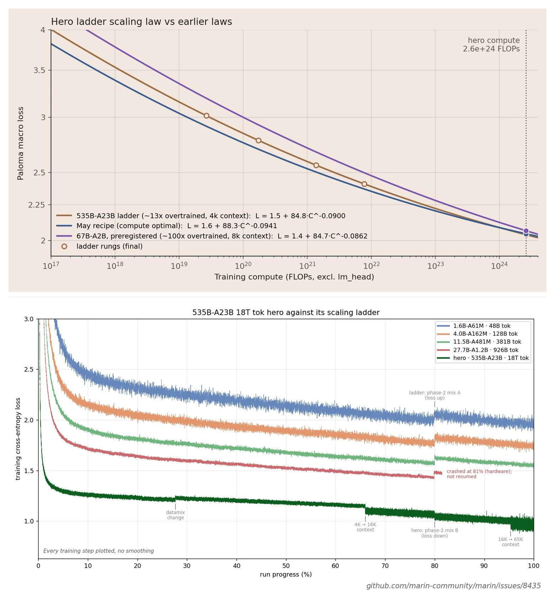
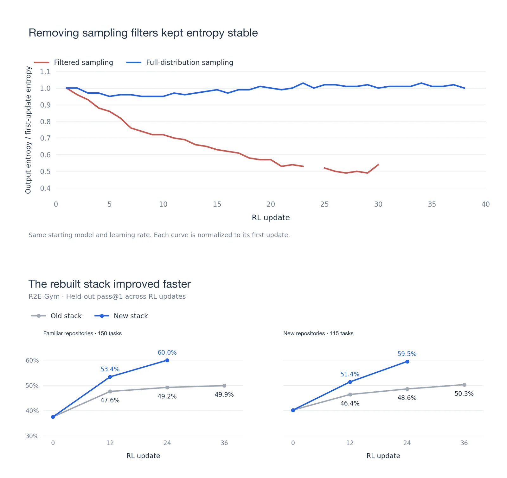
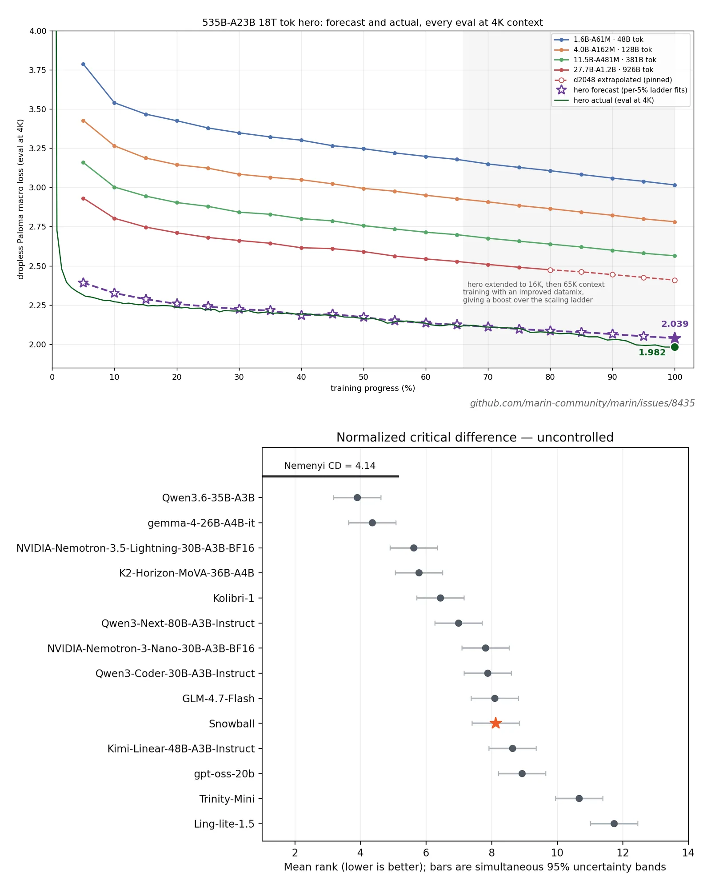

单纯开源模型权重能让人看到最终参数，却很少披露为什么这次训练没有爆 loss、25T tokens 语料如何跨源去重、优化器在两万步时踩过什么数值坑，或者 RL 为什么在中途发生 Entropy Collapse[4][38]。源自 Stanford、由非营利组织 Open Athena 运营的 Marin 项目坚持全流程开放研发（Open Development）：代码、数据配方、预注册 Scaling 预测、负结果、实时集群追踪[1]与中间 checkpoint 全量公开。
本教程按工程时间线系统串讲 Marin 全栈，围绕其两代核心稀疏 MoE 载体展开：
- Marin “Mochi” 535B-A23B：535.3B 总参数 / 22.8B 非 embedding 激活参数的 Normalized LatentMoE，在 704 张 NVIDIA GB200（11 组健康 NVL72 机柜）上于 2026 年 11 月 5 日完成 18T tokens 主预训练[1][2]，并发布 57 个预训练与 262K 长上下文扩展 checkpoint[5]。
- Marin “Snowball” 67B-A2B：在 TPU 上以 10T tokens 过训约 100× 的 MoE 模型，以少 10× 算力和 16× 激活参数超越早先 Marin 32B[8]，成为检验通用 SFT、数学与广域 RLVR、FTPO、模型融合与 Coding Agent RL 的主力开源实验床[11][12][49]。
阅读路线：第 1 章对齐参数/FLOP 核算、GQA vs. MLA、Hyperball、Quantile Balancing 与 5D 并行；第 2–6 章结合 Marin 开源主线实现[17][20]，逐层剖析 Mochi 架构消融、Datakit 25T 治理、Scaling Law 推导与 Scaling Ladder（#scaling-laws）、GB200 系统工程与 262K 扩窗；第 7–9 章详解 Snowball 全链路后训练（09-21 通用 SFT、Datakit Harmony 管线、Relay/Plateau SFT、数学与广域 RLVR、FTPO、Campaign2 融合、Smartie RL、Coding GRPO 与 Mochi 迁移边界）及 26 项基准 Eval Policy[16]。
为什么需要 Marin
机器学习的传统科学方法依赖“观察失误—提出机理解释—设计修复—再次验证”的闭环[4]。随着闭源前沿模型仅暴露 API、连大多数开放权重也隐瞒数据配方与踩坑细节，学术界只能盲人摸象。Marin 与 Open Athena 的定位正是用全透明的大规模实验为社区重建可证伪的因果研究底座。
从 2024 年 1 名全职人手起步，Marin 历经四步演进才具备挑战 535B 级模型的工程底气[4][37][38]：
- 从 “Tootsie” 稠密试错到 Open Athena：团队先用 Google TPU Research Cloud 免费算力以渐进续训（Tootsie）练出在 16/19 基准逼平 Llama 3.1 8B 的 Marin 8B；随后在可抢占 TPU 上勉力拉通 Marin 32B，靠接入 QK-Norm 平息尖刺并清理 Dolmino 中的 GSM8K 污染[10]。并入 Open Athena 后扩编至 10 名全职工程师，由 Russell Power 打造多区域调度器 Iris，将硬件故障恢复时间从 ~1 小时压缩到几分钟。
- Delphi 与 MoE V1（6.7× 理论 / 3.6× 实测加速）：先用
Delphi验证稠密 Scaling Law 可在 $300\times$ 跨度内以0.2%误差外推，再在 TPU v4 上用Marin MoE V1（129B-A16B，1T tokens，$10^{23}$ FLOPs）结合 Quantile Balancing、AdamH、GatedNorm 与 XSA 拿下2.234Paloma loss，比预注册预测（2.252）再低0.8%。 - Hero 之前的四项叠加提速（再获 2.1× 理论加速）：在 MoE V1 基础上经过四档算力严格消融（详推见第 4.2 节）[37]，依次叠加高稀疏专家（
64 → 256，1.4×理论 /1.3×实测）、MuonH（1.3×/1.25×）、Partial Key Offset 配 50% Partial RoPE（1.2×/1.2×）以及社区成员 Elie Bakouch 建议的 2.5 Sigmoid 重归一（1.04×），同时推动 IsoFLOP 最优点向“少激活参数、更多 token”偏移。 - 7 月集群倒计时下的三条铁律与 Marin Belay：拿到 Jen-Hsun & Lori Huang Foundation 资助的 768 张 GB200 与 12 月交付窗口后，团队立下三条优先级[2]——实测 MFU 至上、预注册 Scaling 曲线并用 W&B 实时直播[1]、保留利于 SFT/RL 的诱导偏置（含 5% 终点学习率）；此外还推出 Marin Belay，由 Agent 自动把社区在 GitHub Issue 提出的想法实现并送入缩放梯子检验。

算力、路由与并行基础
进入具体模块前，我们先对齐贯穿全栈的四套基础推导，来源涵盖 JAX Scaling Book[27]、Transformer 算力拆解[34]、5D 并行原语[33]及苏剑林的 MoE 几何与 Quantile Balancing 系列推演[28]。
参数量与 FLOPs 核算
Marin 的 JAX 源码一律把 token 特征写成行向量 $X \in \mathbb{R}^{B \times S \times D}$，其中 $B$ 为全局序列批大小，$S$ 为序列长度（启动期 4,096），$D$ 为主干隐藏维度（d6144 即 $D=6144$）。Attention 的 Q 头数为 $H_q$、KV 头数为 $H_{kv}$、单头宽度固定 $d_h=128$，整个缩放梯子始终保持 $D = H_q d_h$。
对固定计算部分参数 $N_{\text{fix}}$（Attention、Router、Shared Experts、Norm）、$E$ 个规模均为 $P_e$ 的 Routed Experts 及每 token 选 $K$ 个专家的 MoE 层，总参数与激活参数按如下公式核算[18]：
$$N_{\text{total}} = N_{\text{fix}} + E P_e, \qquad N_{\text{active}} \approx N_{\text{fix}} + K P_e$$切忌直接用 $N_{\text{total}} \times K/E$ 估算激活规模——例如 $N_{\text{fix}}=200\text{M}$、$E=8$、$K=2$、$P_e=100\text{M}$ 时，总参数 1B 而实际激活 400M（不是 250M）。按 Mochi 48 层及 V=128,256 非共享词表头逐层累加，非 embedding 参数总量为 533.8B（含头尾 535.3B），激活非 embedding 参数为 22.8B（含头尾 24.4B）。
常规稠密 Transformer 单次训练迭代的计算量（按前向 + 约 $2\times$ 反向合计 $3\times$）可展开为[34]：
$$F_{\text{iter}}^{\text{dense}} = 72 B L S D^2 \left(1 + \frac{S}{6D} + \frac{V}{12 D L}\right) = \underbrace{72 B L S D^2}_{\text{线性层与 MLP}} + \underbrace{12 B L S^2 D}_{\text{Attention}} + \underbrace{6 B S D V}_{\text{lm\_head}}$$引入 LatentMoE 后，Levanter 默认算力估算仍按主干宽度 $D$ 定价 Routed Experts。每个压缩至 $d_l$ 维的 SwiGLU 专家前向仅耗 $6 d_l d_{\text{ff}}$ FLOPs，外加一次下/上投影 $4 D d_l$ FLOPs（因先合并后统一升维）。为此 Marin 团队在实现时对每层施加精确修正后再按 $F_{\text{example}} = 3 S \cdot F_{\text{fwd/tok}}$ 折算 MFU，避免因漏算减半维度而将 MFU 虚高近两倍[25][27]：
$$\Delta F_{\text{layer}}^{\text{latent}} = 2 \cdot 3 \, d_{\text{ff}} \, K (d_l - D) + 4 D d_l, \qquad \text{MFU} = \frac{F_{\text{train/token}} \times \text{tokens/sec}}{N_{\text{GPU}} \times P_{\text{peak/GPU}}}$$注意力、位置编码与归一化
自回归推理期按元素字节宽 $b_{\text{elem}}$ 缓存长度 $S$ 的 KV 序列时，每层显存占用由保存的 KV 头数 $H_{kv}$ 决定。Grouped Query Attention（GQA）通过分组映射 $g(h)$ 将 $H_q$ 个查询头按每组 $H_q / H_{kv}$ 个头共享同一组 KV：
$$\begin{aligned} \mathrm{KV}_{\text{bytes}}^{\text{GQA}} &= 2 S H_{kv} d_h b_{\text{elem}}, \qquad g(h) = \left\lfloor \frac{h}{H_q / H_{kv}} \right\rfloor \\ o_t^{(h)} &= \sum_{j \le t} \operatorname{softmax}_j\!\left(\frac{q_t^{(h)} \bigl(k_j^{(g(h))}\bigr)^\top}{\sqrt{d_h}}\right) v_j^{(g(h))} \end{aligned}$$在 Mochi（$H_q = 48$、$d_h = 128$、BF16 下 $b_{\text{elem}} = 2\text{ B}$）中，全量 MHA（$H_{kv}=48$）每 token 每层需 $24\text{ KiB}$；局部 4:1 GQA（$H_{kv}=12$）将缓存压至 $6\text{ KiB/tok/层}$，全局 8:1 GQA（$H_{kv}=6$）则进一步降到 $3\text{ KiB/tok/层}$。
作为对照，DeepSeek 提出的 Multi-head Latent Attention（MLA）先将隐状态压缩为共享低秩 KV 潜向量 $c_t^{KV} \in \mathbb{R}^{d_c}$ 与解耦旋转键 $k_t^R = \operatorname{RoPE}(x_t W_{KR}) \in \mathbb{R}^{d_h^R}$，再通过升维矩阵重构 $k_t^C, v_t^C$，并在推理解码时把 $W_{UK}^\top$ 吸收进查询投影，使缓存仅需保留 $(c_t^{KV}, k_t^R)$：
$$\begin{aligned} c_t^{KV} &= x_t W_{\text{DKV}} \in \mathbb{R}^{d_c}, \qquad k_t^C = c_t^{KV} W_{UK},\qquad v_t^C = c_t^{KV} W_{UV} \\ q_t^C (k_j^C)^\top &= \bigl(q_t^C W_{UK}^\top\bigr)\bigl(c_j^{KV}\bigr)^\top, \qquad \mathrm{KV}_{\text{bytes}}^{\text{MLA}} = S (d_c + d_h^R) b_{\text{elem}} \end{aligned}$$Mochi 选择把 Attention 保持在内核高效、与 FA4 更贴合的 GQA，将低秩潜空间压缩专用于 384 专家 MoE 通信瓶颈路径。
RoPE、Partial RoPE 与 NoPE：旋转位置编码以底数 $b$ 和几何频率 $\omega_j$ 旋转每对二维坐标 $(2j, 2j+1)$；利用二维旋转矩阵的正交性，位置 $p, t$ 的内积自然化为仅与相对位移 $t-p$ 相关的旋转内积。Partial RoPE 只对前 $d_r$ 维施加旋转、其余维度保留静态 NoPE：
$$\begin{aligned} R(\theta) &= \begin{pmatrix} \cos\theta & -\sin\theta \\ \sin\theta & \cos\theta \end{pmatrix}, \qquad \omega_j = b^{-2j/d_r}\ \ \bigl(j = 0,\dots,\tfrac{d_r}{2}-1\bigr) \\ \bigl(R(p\omega_j)\,q_{p,j}\bigr)^\top \bigl(R(t\omega_j)\,k_{t,j}\bigr) &= q_{p,j}^\top R(p\omega_j)^\top R(t\omega_j)\,k_{t,j} = q_{p,j}^\top R\bigl((t-p)\omega_j\bigr)\,k_{t,j} \\ \tilde{q}_p &= \Bigl[\underbrace{\operatorname{RoPE}_{p}(q_{p,\,1:d_r})}_{d_r = d_h/2},\;\underbrace{q_{p,\,d_r+1:d_h}}_{\text{NoPE}}\Bigr] \end{aligned}$$Mochi 在局部 SWA 层启用 50% Partial RoPE（$d_r = 64, d_h = 128$）以保留静止维供 Partial Key Offset 归纳匹配，而在全部 12 个全局注意力层彻底采用 NoPE（$d_r = 0$）。
LeRoPE vs. YaRN 频率插值与温度外推：将上下文扩展倍率为 $s = L_{\text{new}} / L_{\text{old}}$ 时，LeRoPE 将各频段缩放写成可学习对数乘子 $\alpha_j$；YaRN 则按原窗内的旋转圈数 $r_j$ 划分三段——高频（$r_j \ge \beta$）保持原速以保局部精度，低频（$r_j \le \alpha$）按 $1/s$ 线性拉伸，中间带按截断斜坡 $\gamma_j$ 平滑过渡（典型取 $\alpha=1,\beta=32$），并用温度系数 $m(s)^2$ 拉高注意力 logits 防长窗熵散失：
$$\begin{aligned} \text{LeRoPE:}\quad \tilde{\omega}_j &= e^{\alpha_j}\omega_j \quad (\alpha_j\text{ learnable}) \\ \text{YaRN:}\quad r_j &= \frac{L_{\text{old}}\,\omega_j}{2\pi}, \qquad \gamma_j = \operatorname{clip}\!\left(\frac{r_j - \alpha}{\beta - \alpha},\, 0,\, 1\right), \qquad \tilde{\omega}_j = (1 - \gamma_j)\frac{\omega_j}{s} + \gamma_j \omega_j \\ \text{Logits:}\quad \ell_{p,t} &= \frac{m(s)^2}{\sqrt{d_h}}\,\tilde{q}_p^\top \tilde{k}_t, \qquad m(s) = 1 + 0.1\ln s, \qquad s = \frac{L_{\text{new}}}{L_{\text{old}}} \end{aligned}$$正因全局层采用 NoPE，Mochi 后续 65K → 262K 长窗外推（见第 6.2 节）只需继承这套对数平方 $m(s)^2$ 温度重标定，无需强改旋转波长。
QK-Norm 角度界、Rank-128 GatedNorm 与 Logit $z$-Loss：注意力头的无参数 RMSNorm 将向量 $L_2$ 范数严格钉死在 $\|\hat{q}_p\|_2 = \|\hat{k}_t\|_2 = \sqrt{d_h}$，乘以固定缩放系数 $c$ 后使注意力分数退化为纯粹的夹角余弦度量（4K 起步 $c=1.3, d_h=128 \Rightarrow c\sqrt{d_h} \approx 14.71$）：
同时为在定范数约束下保留逐维输入门控、并防止过训期词表输出对数配分函数漂移，Mochi 在残差支路加入 rank-128 GatedNorm（$W_{\text{down}} \in \mathbb{R}^{D\times 128}, W_{\text{up}} \in \mathbb{R}^{128\times D}$），在输出端保留二次 logit $z$-loss：
$$\begin{aligned} \operatorname{GatedNorm}(x) &= u \odot \sigma\!\bigl(\operatorname{SiLU}(u W_{\text{down}})\,W_{\text{up}}\bigr), \qquad u = \operatorname{RMSNorm}(x) \odot g \\ \mathcal{L}_z &= \lambda_z \cdot \frac{1}{BS}\sum_{t=1}^{BS} \left(\log \sum_{v=1}^{V} e^{z_{t,v}}\right)^2 \qquad (\lambda_z = 10^{-4}) \end{aligned}$$前向激活 Norm 与优化器 Hyperball (MuonH / AdamH) 属于正交机制——前者缩放前向激活，后者在每步更新后将权重块投回初始 Frobenius 范数球面 $R = \|W\|_F$：
| 稳定化机制 | 执行阶段 | 直接约束对象 | 协同边界说明 |
|---|---|---|---|
| MuonH / AdamH | Optimizer Step | 权重块范数 $R = \|W\|_F$ 与相对转角 | 消除了权重增长带来的隐式 LR 衰减，故宜配线性衰减 |
| QK RMSNorm | Attention 前向（Q, K） | Q/K 向量范数与打分倍率（1.3） | 可与 Hyperball 并用，扩窗时便于人工阶梯拉高倍率 |
| Latent RMSNorm | x W_down 之后 | 压缩路由潜变量激活尺度 | 可学习 gain 修复双层小初始化造成的 $0.25\times$ 萎缩（#6822） |
| GatedNorm + z-loss | Block / 词表输出端 | 逐通道输入门控与输出 logits 尺度 | $10^{-4}(\log\sum_v e^{z_{t,v}})^2$ 防止末层可学习 RMSNorm gain 失控 |
MoE 路由与 Quantile Balancing
按照苏剑林的几何视角[28]，Dense FFN 可等价写为单位方向向量与模长的和 $\sum_{i=1}^E \rho_i e_i$，稀疏 MoE 即先用轻量 Router 预测全部 $\rho_i$ 再仅计算 top-$K$ 个专家。若缺省均衡约束，冷门专家将因梯度匮乏迅速进入“选得越少越弱”的死亡螺旋[7]。
对比传统方法：GShard 辅助损失 $\alpha\mathcal{L}_{\text{bal}}$ 会干扰主任务收敛；DeepSeek Aux-Loss-Free 用固定步长 $\gamma=0.001$ 在更新模型权重之后迭代偏置 $b_i \leftarrow b_i + \gamma\operatorname{sign}(\bar{c}-c_i)$（避免泄露批次统计给当步更新）；Arcee SMEBU 进一步加入了偏置动量。同时注意 bias 的平移规范不变性：$b + c\mathbf{1}$ 不改变 $\operatorname{argtop}_K(s+b)$，故 $(b-\bar{b}\mathbf{1})$ 司职专家均衡，均值 $\bar{b}\mathbf{1}$ 则控制平均激活配额；而选路用加 bias 门、输出乘回原始门控激活（Gate 与 Bias 解耦）能让超参跨激活函数复用。
苏剑林将全局批次 $M$ 个 token 与 $E$ 个专家间的最优分配写成线性规划[29][30]，从对偶乘子 $\alpha_t, \beta_i$ 导出彻底无超参的 Quantile Balancing (QB)：
$$\max_{x_{t,i} \in [0,1]} \sum_{t=1}^M \sum_{i=1}^E x_{t,i} s_{t,i} \qquad \text{s.t.} \quad \sum_{i=1}^E x_{t,i} = K,\quad \sum_{t=1}^M x_{t,i} = \frac{MK}{E}$$- Token 侧临界值：在含偏置打分 $s_t + b^{(t)}$ 上读取第 $(K+1)$ 大值 $\alpha_t = (s_t + b^{(t)})_{(K+1)}$，算出边界差矩阵 $m_{t,i} = s_{t,i} - \alpha_t$。
- 专家侧分位数：取各专家 $m_{t,i}$ 的 $(1 - K/E)$ 上分位数 $\beta_i = Q_{1 - K/E}(\{s_{t,i} - \alpha_t\}_{t=1}^M)$，令 $b^{(t+1)} = -\beta$（
stop_gradient）。
Open Athena 先在 32B-A5B / 326B tokens（$10^{22}$ FLOPs，32 层 × 64 专家 top-4）上验证了 QB 零 loss 尖刺且无需前置稠密层，一举消除了 $10^{21}$ 固定步长方案前 5,000 步的路由震荡与 50+ 步专家假死（Layer 1 路由余弦相似度在前 4,000 步短暂聚拢后于 60,000 步清晰分化）[7]。配合处理长尾共性知识的共享专家、适度细粒度切分以及面向单请求自回归生成的 Moving Quantile Balancing (MQB)[31] 和非竞争 Sigmoid 门控[32]，MoE 路由实现了理论与实操闭环。
5D 分布式并行原语
在 BF16 计算与 FP32 主权重/动量组合下（$16\text{ B/param}$），535B 模型光静态状态即达 $\sim 8\text{ TiB}$，远超单张 B200 的 $185\text{ GiB}$ HBM[6]。五大并行轴各司其职[33]：
| 并行轴 | 切分对象 | 核心集合通信 | Marin / GB200 部署角色 |
|---|---|---|---|
| DP | 全局 batch / 序列 | All-Reduce / Reduce-Scatter | DP=11 经 50 GB/s InfiniBand 复制 11 组完整机柜单元 |
| FSDP | 权重、梯度与优化器状态 | All-Gather + Reduce-Scatter | 机柜内分片 Attention、Shared Experts 及非路由权重 |
| TP (+ SP) | 矩阵维度与序列 Norm 激活 | All-Reduce / All-Gather | 注：Megatron SP 与 TP 共组（$N_{\text{GPU}} = N_{\text{DP}} N_{\text{TP}} N_{\text{PP}}$，区别于 CP） |
| PP | Transformer 层间切分 | 点对点 Send/Recv | 机柜内 HBM + Host Offload + lax.scan 足够，Mochi 免除 PP 气泡 |
| EP | MoE Routed Experts | All-to-All Dispatch/Combine | EP=64 独享机柜内 900 GB/s NVLink（每卡 6 专家） |
为何超出 360B 就必须放弃纯 FSDP 改上 EP？Mochi 约 $97\%$ 参数落在路由专家中。以单机柜 1,024 条 4K 序列、64 卡（top-8 LatentMoE $d_l=3072$）估算：每层前向 FSDP 须 All-Gather 约 $20\text{ GiB/GPU}$ 权重，而 EP 仅收发约 $6\text{ GiB/GPU}$ 压缩 token——且继续堆大专家总数会线性拉高 FSDP 通信量，EP 通信却保持恒定。
Mochi 535B 架构设计
Mochi 的全部模块改动必须连过两关：2026 年 5 月基线定律 $L(C) = 1.6 + 88.90 \cdot C^{-0.0941}$ 下的等效算力效率（如 $1.18\times$ 表示基线多耗 18% 算力才追平）与 GB200 实测 MFU[2]。
模型定型与浅宽同构骨干
Issue #7201 记录了六项硬约束下的寻优过程：768 卡 12 月截止期（~25 天联调 + ~80 天训练 + 15 天缓冲）、比 60:1 计算最优点过训约 13×（1.4T → 18T，用 ~2× FLOP 折扣换取强推理基座）、64 卡 NVL72 单机柜 HBM 边界（11.6 TiB）、23.11T 去重数据池、12 月 2–3 周 RL 算力预留与滚动采样速度[2]：
候选方案（Issue #7201） | 并行与注意力 | 20T 预计工期 | 取舍结论 |
|---|---|---|---|
129B-A15B MoE | 单柜 FSDP | 57 天 | 容量偏小，无法吃满 80 天训练窗口 |
360B-A23B MoE | 单柜 FSDP + GQA | 82 天 | 单柜纯 FSDP 极限规格；曾为首选保底方案 |
707B-A23B / 360B-A21B MLA | 跨两柜 FSDP / 单柜 MLA | 99 天 / 120 天 | 跨柜 IB 降速或 MLA 实测吞吐超出工期 |
535B-A23B Mochi | DP11 × EP64 + LatentMoE (8/384) | 85 天（18T 11 月 5 日完赛） | EP 突破单柜 FSDP 上限，综合算力效率提升 1.3× |
骨架最终定型为 48 层 × $D=6144$（宽深比 128，参考 Command A+ 的 32 层经验并确保高 MFU）且取消前置 Dense 层[17]。全层同构使得单个 jax.lax.scan 循环即可编译全部 48 层并严控显存开销；Attention Residuals、mHC、MLA、Multi-Token Prediction (MTP)、Looped Depth[35][36] 与 n-gram embedding 等机制因 7 月开跑前未过 MFU 门槛或可由独立草稿模型替代而暂缓。

| 核心超参 | Marin 535B-A23B（Mochi） | Marin Snowball 67B-A2B | Marin 32B（Phase 3+ 稠密） |
|---|---|---|---|
| 总参数 / 激活参数 | 535.3B / 22.8B（非 embed 激活） | 67B / ~2B active | 32B Dense |
| 深度 × 宽度（$L \times D$） | 48 层 × 6,144（ratio 128），init $0.5/\sqrt{D}$ | 面向 TPU 的细粒度深度 MoE | 64 层 × 5,120（$d_{\text{ff}}=27648$） |
| MoE 与共享专家 | 8 / 384 LatentMoE ($d_l=3072$) + 2 共享 | 高稀疏 TPU MoE | 稠密 SwiGLU |
| Attention 与 KV 布局 | 3:1 SWA (2048) / Global；48Q；12/6 KV | 低 KV 占用以加速 RL Rollout | 全因果 40Q / 8KV GQA |
| 位置编码与稳定器 | 50% RoPE / NoPE；1.3 QK-Norm；XSA；SConv | Partial RoPE + QK-Norm；扩窗 262K | RoPE + Qwen3 QK-Norm |
| 预训练规模与硬件 | 18T tokens（704 GB200s） | 10T tokens（TPU v4/v5p） | 6.437T tokens（Mantis） |
Normalized LatentMoE
Mochi 的 FP32 Router 仍直接读取全宽 $D=6144$ 特征，2 个全宽共享专家也全程留在本地（提供总激活 MLP 神经元的 $1/3$ 作为安全冗余）。只有路由路径先压维并经归一化再跨卡派发，聚合后统一升维：
$$z = \operatorname{RMSNorm}_{\gamma}\!\left(x W_{\text{down}}\right), \qquad y_{\text{routed}} = \left(\sum_{e \in \mathcal{K}_{\text{kept}}} g_e E_e(z)\right) W_{\text{up}}$$由于 $d_l = 3072$ 与专家中间维 $d_{\text{ff}} = 3072$ 相等，384 个专家内部的三枚 SwiGLU 矩阵均为 $3072 \times 3072$ 方阵。方阵让 Muon 的正交化在输入与输出维上均匀生效，免去了 NorMuon 或 Aurora 针对长方阵神经元失衡的补丁。
但未经归一化的 LatentMoE 最初在 d512–d1024 消融里掉到 0.74–0.75× 效率（Issue #6822）——根源在于 $W_{\text{down}}, W_{\text{up}}$ 均按 $0.5/\sqrt{D}$ 初始化，叠加 $0.5 \times 0.5 = 0.25$ 尺度坍缩（诊断标量在多层立刻攀升至 $\approx 4$、首层 $\approx 3.1\text{–}3.2$）。在瓶颈处加入一个可学习的 RMSNorm(3072) 后，算力效率跃升至 1.25× 且 All-to-All 传输载荷减半，令 8/384 以 4/192 的通信代价吃下全部细粒度质量收益：
| 路由专家粒度 | 单专家宽（d768） | Paloma Loss（d768） | Paloma Loss（d1024） | 等效算力效率 |
|---|---|---|---|---|
| 4 / 192 | 768 | 3.0289 | 2.7810 | 1.00× 基线 |
| 8 / 384（Hero） | 384（与 $d_l$ 等宽方阵） | 3.0091 | 2.7674 | 1.16×（d768）/ 1.13×（d1024） |
| 16 / 768 | 192 | 3.0009 | 未跑 | 1.23×（吞吐收益递减） |

#6822 诊断无 Norm LatentMoE 尺度坍缩（可学习标量自动爬升至 $\approx 4$）；下：Raw Logits 直方图 QB 丢包稳定在 ~2.0%，明显优于 Kimi-K3 式的 Post-Sigmoid 分箱（3.4–4.9%，#8033）。来源：Larry Dial, Open Athena (2026) [2]。直方图 QB 与 Sigmoid 门控
为摆脱跨卡张量切分对分位数均值（top-k average）的影响，Marin 团队在 Mochi 中落地了与 GPU 数彻底解耦的 10,000 分箱实时全局直方图（QbEstimator.HIST，Issue #8033）[2][20]：
- 坚持在 Raw Logits 上维护偏置：相比 DeepSeek-V3 / Kimi K3 在 Sigmoid 后的 $[0, 1]$ 区间做直方图，Raw Logits 方案在
d768下收敛更快、丢包低至~2.0%、路由熵高达4.848（满熵 $\ln 128 = 4.852$），显著领先 Post-Sigmoid 的3.4–4.9%丢包与4.786–4.821熵值。 - 单次整数
psum无痛估算：实现上先用pmin/pmax锁定当步边界，再通过jnp.bincount(10000)计数并做一次整数全局归约即可插值读出上分位数 $\beta_e$，实测对 MFU 几乎零影响。 - 无偏置 2.5 Sigmoid 权重归约：经 $s+b$ 选中后，组合权重按不带 bias 的原始分数 $g_e = \frac{2.5\,\sigma(s_e)}{\epsilon + \sum_{k \in \mathcal{K}} \sigma(s_k)}$ 计算（团队同时在文末指出：配比切换时 QB 1–2 步快切是否过于剧烈以及首两层路由专家梯度偏小仍是后续值得深究的问题[2]）。
混合注意力、XSA 与 SConv
其余微架构设计围绕长窗显存、早训稳定度与浅网信息混合严密配合[2]：
- 非对称 GQA 配 2048 SWA：每 4 层（及末层 47）采用 8:1 GQA 全局层（6 KV 头）+ NoPE，长下文 KV 成本可控；其余 36 层采用 2,048 窗口局部注意力（vLLM 实测比 512 仅慢 2–4%，算力效率却高 $1.10\times$：
3.0208vs3.0334）配 4:1 GQA（12 KV 头，局部缓存受窗口截断封顶），退回全 MHA 虽能换取 $1.18\times$ 但会牺牲长上下文 KV 显存。 - 固定
1.3QK RMSNorm：在d768上稳胜无 QK-Norm（3.0208vs3.0281），在d2048上与自动长到~2.0的可学习 gain 几乎完全打平（2.6477vs2.6484），却为扩窗提供确定可控的升温接口。 - XSA + Head Gate 腰斩早训丢包：因 Hyperball 会锁定零初始化的 $W_o$ 而无法沿用 MAI-Thinking-1 方案，团队用零成本的 XSA 减去输出在自身 value 上的投影，并接零初始化的
2*sigmoid头门控（初值恰好为 1.0），在 100 步d6144加速 warmup 测试中将前期 drop rate 从>50%（30–100 步均值12.7%）骤降至21%（均值5.6%）。 - GatedNorm 与 Embedding RMSNorm：rank-128
GatedNorm放入 MuonH（d1024得分3.1352略优于 Adam3.1392），而token_embed留在 Hyperball 外用 Plain Adam（范数从177→7,800自然衰减有效学习率）配合出口RMSNorm贡献了+19%算力效率（#4569）。 - 4 阶因果
SConv（刻意跳过V）：源自 Inkling[36] 的跨文档边界掩码短卷积放在K、attn_out和mlp_out（全开最高1.19×，全关在 Herod768损失+0.028），唯独不对V做卷积以免邻近词混淆 XSA 减除自身 value 的方向；此外实验证明 PKO 初始化仅在 150 步时领先 0.4、终点反而洗掉落后+0.003（#7585），故仍用恒等初始化。

d6144 早期 EP 丢包率腰斩（#8227）；下：可学习 QK 缩放虽升至 2.0，终点表现（2.6484）仍不敌固定 1.3（2.6477）。来源：Larry Dial, Open Athena (2026) [2]。SConv 消融（d1024）与 QK-Norm 对照（d768） | Paloma Loss | 等效算力效率 | 架构取舍说明 |
|---|---|---|---|
SConv：K, V, attn_out, mlp_out（k=4） | 3.0378 | 1.19× | Hero 保留 K / attn_out / mlp_out，摘除 V 保护 XSA |
SConv：四处全开（k=3 / k=2 / 仅全局层） | 3.0387 / 3.0440 / 3.0482 | 1.18× / 1.13× / 1.10× | 减小窗长或仅覆 1/4 层数均显著削弱归纳头收益 |
SConv：单开 mlp / K / attn / V / 全关 | 3.0506..3.0610 | 1.08×..1.00× | 前三位点增益稳定可叠加 |
QK-Norm（d768）：固定 1.3 / 可学习 / 无倍率 / 无 | 3.0208 / 3.0217 / 3.0261 / 3.0281 | 基准对照 | 固定 1.3 既稳健又保留可预期扩窗界面 |
JAX / Equinox 核心实现
下面摘录并浓缩了 Marin 公开前向实现的核心代码[20]，直观展示 XSA、头门控、FP32 10,000 分箱直方图 QB 以及 Normalized LatentMoE 瓶颈的数据流转：
# 节选自 experiments/grug/moe_hero_ep/model.py (commit 12d8b6f09f96)
def xsa_and_head_gate(attn_out, v, x, attn_gate, w_o, batch_spec):
aligned_v = reshard(align_kv_heads(v, num_q_heads=attn_out.shape[2]), _partition_spec_of(attn_out))
dot = jnp.sum(attn_out * aligned_v, axis=-1, keepdims=True)
v_norm_sq = jnp.sum(aligned_v * aligned_v, axis=-1, keepdims=True)
# XSA：逐头剔除输出在自身 value 方向上的投影分量
attn_out = attn_out - (dot / (v_norm_sq + 1e-6)) * aligned_v
gate = 2.0 * jax.nn.sigmoid(jnp.einsum("bsd,dn->bsn", x, attn_gate))[..., None]
attn_out = jnp.reshape(gate * attn_out, (*attn_out.shape[:-2], -1), out_sharding=P(_BATCH_AXES, None, "model"))
return jnp.einsum("bsh,hd->bsd", attn_out, w_o, out_sharding=batch_spec)
def moe_forward_latent_qb(self, x_flat):
# 1. FP32 Router 读取全宽 D=6144；QB bias 仅作用在带 stop_gradient 的选路 logits 上
logits = jnp.einsum("td,de->te", x_flat, reshard(self.router, P(None, None))).astype(jnp.float32)
biased = logits + jax.lax.stop_gradient(self.router_bias)
topk_biased, idx_plus_1 = jax.lax.top_k(biased, self.cfg.num_experts_per_token + 1)
qb_alpha, selected = topk_biased[:, -1:], idx_plus_1[:, :-1]
# 2. 用无偏置 logits 算 Sigmoid 并归一化到 2.5
raw_weights = jax.nn.sigmoid(jnp.take_along_axis(logits, selected, axis=-1))
weights = (raw_weights * (2.5 / (jnp.sum(raw_weights, axis=-1, keepdims=True) + 1e-9))).astype(x_flat.dtype)
# 3. 跨卡 10,000 分箱实时直方图计算 (1 - K/E) 上分位数 beta
beta, lo, hi = _qb_beta_hist(reshard(logits - qb_alpha, P(_BATCH_AXES, None)), mesh=get_abstract_mesh(),
num_experts_per_token=8, num_experts=384, n_bins=10_000)
# 4. Normalized LatentMoE：6144 -> 3072 -> 可学习 RMSNorm -> EP64 -> 3072 -> 6144
routed_in = self.latent_norm(jnp.einsum("td,dl->tl", x_flat, self.w_latent_down.astype(x_flat.dtype)))
routed_latent, overflow = self.expert_mlp(routed_in, selected.astype(jnp.int32), weights, report_capacity_overflow=True)
routed_out = jnp.einsum("tl,ld->td", routed_latent, self.w_latent_up.astype(x_flat.dtype))
return routed_out, {"qb_beta": beta, "overflow": overflow.total}Datakit 25T 数据管线
开源社区虽已沉淀数十万亿 token 语料，但跨机构抓包重解析与合成改写造成了巨量冗余，且公开训练划分里时常藏有测试题。Marin 通过 Datakit[3] 将 152 份原始数据统一清洗、全球去重去污染并转化为 200 个可随算力动态调配的配比桶[19]。

25.25T → 23.11T 清洗、40×5 主题质量分桶以及 872 组代理配比实验与回归优化过程。来源：Will Held, Open Athena (2026) [3]。语料汇聚、去重与去污染
Marin 团队在 Datakit 中登记了 AI2、NVIDIA、HuggingFace、HPLT 及各类学术/代码/Agent 轨迹等 152 个数据源（18.71B 原始文档、25.25T Llama-3 tokens）（注：Ben Feuer 的 142 组 trace 记为一组；早期规划文档曾记作 25.6T 池规模）[3]：
- 标准化与“不转售镜像”原则：写入含文本哈希和
source_id的 Parquet，压缩极端空白行（团队曾实遇几乎 99% 由空格组成的网页导致分词器爆内存），并仅固定上游 commit 而不转存副本，确保 Stack v3 等数据作者行使下架权时 Marin 下次构建可同步尊重。 - 精确哈希 + Word 5-Gram MinHash/LSH 去重：精确哈希清理约 5.05 亿条源内与跨源完全重复，随后基于词级 5-gram（不是 5 个模型 BPE token）做 LSH 近似检索与二次复核，共剔除 2.33B 文档（12.5%）/ 2.13T tokens（8.4%）——6.86 亿条跨源重复链接里 93.2% 集中于三组数据对（尤以 Nemotron 合成改写与 Common Crawl 原文互重最多）。由于单字符微差在 DNA 与工具 JSON 中决定语义，团队专门将 16 个敏感源设为模糊去重豁免（可用池从
23.01T增至23.11T）[19]。 - 13 词 Bloom 去污染与公开勘误：任一段落若有 $\ge 50\%$ 的 13 词窗口命中 Artificial Analysis 或 Marin 评测集即整篇移出，再滤除 13.66B tokens（较短字母段落走精确子串守卫）。团队也毫无保留地公开了两次漏网案例：Marin 32B 在 Dolmino 漏入 GSM8K 后反因 prompt 格式冲突拉低新格式准确率（后于 Mantis 修复[10]），Mochi 在 step 362k 亦排查出 Penn Treebank 泄漏（占 Paloma 1/16 权重、贡献 ~
0.02loss）。 - AI 合成数据与反垃圾评分准则：全池约 25% 来自明确由模型合成的数据；针对“AI 文本语法过于工整却质量分化”的现实，Datakit 的分类器重点识别 SEO 垃圾、乱码扫描 PDF 等无信息文本（并对代码单独设标），而非机械追捧教材体裁。
Harrier 分桶与代理配比
为了在 Common Crawl 内部精准把数学/代码页与菜谱、广告切分开，同时不锁死静态分类体系，Datakit 将神经特征计算与分类配比实验彻底解耦：
- 一次性 Harrier 1,024 维表征：利用微软开源检索模型 Harrier（Qwen 微调）为全部文档预先抽出 1,024 维语义向量。
- 40 个等容语义主题：先对采样做 5,000 簇球面 $k$-means，再层次聚类合并为 40 个各占 $\ge 1\%$ 语料的均匀主题，防止极小桶权重调不灵；经 5 选 1 LLM Intruder 测试，1,000 簇准确率达
84.4%、40 大类达62.5%（随机基线20%，$p < 0.001$）。 - 5 档质量分型（保留低分桶）：按代码、正文、数学分别标定 FineWeb-Edu 风格分类器得 200 桶；保留低分数据让同一底座能按预算重配权重——小算力多吃头部高分桶，大算力则需靠低分长尾稀释重复暴露。
- Simulated Epoching 代理回归：使用 872 至 1,000+ 组小模型实验（
grug-moe-mix-swarm），在算力 $\le 10^{23}$ FLOPs 时启用simulated_epoching按激活参数比例同步缩窄每桶数据池，令小模型一比一复现 Mochi 的真实重复遍数（最高2.09 epochs，远低于 8-epoch 上限），再参考 RegMix 与 Calvin Xu 重复拟合律最优化 200 桶权重[19]。
最终定型的 Harrier 两阶段配比以 15T / 3.75T（80% / 20%）按比例映射到 Mochi 的 18T 规划，经 Feistel 置乱打包成 4,096 序列并用文档边界掩码阻断跨文档注意力与 SConv。
Scaling Law 推导与缩放梯子
为什么敢在 704 张 GB200 上一跑三个月而不盲猜超参？Open Athena 把 Scaling Law 拆成四层“风洞”系统[40]：无偏参数曲面拟合器（VPNLS）、长周期可迁移优化器配方（Delphi）、19 格联合回归学习率律（MoeHeuristic），以及用 1% 算力 $300\times$ 外推预测 535B Hero 终点的五阶 Scaling Ladder。
IsoFLOPs、Approach 2 偏差与 VPNLS
从五参数 Chinchilla 损失曲面出发，按前反向算力约束 $C \approx 6 N_{\text{act}} D$ 消去参数量 $N = C/(6D)$，每条等算力（IsoFLOP）切片均可写为训练 token 数 $D$ 的单变量函数[41]：
$$L(N,D) = E + \frac{A}{N^\alpha} + \frac{B}{D^\beta} \qquad \Longrightarrow \qquad L(D; C) = E + A\left(\frac{6D}{C}\right)^{\alpha} + \frac{B}{D^\beta}$$令导数 $\frac{\partial L}{\partial D} = \frac{\alpha A}{D}\left(\frac{6D}{C}\right)^\alpha - \frac{\beta B}{D^{\beta+1}} = 0$，即推得固定算力下的算力最优配比幂律及包络下界：
$$D^*(C) = \left(\frac{\beta B}{\alpha A}\right)^{\frac{1}{\alpha+\beta}}\left(\frac{C}{6}\right)^{\frac{\alpha}{\alpha+\beta}}, \qquad N^*(C) \propto C^{\frac{\beta}{\alpha+\beta}}, \qquad L^*(C) = E + K \cdot C^{-\gamma}, \quad \gamma = \frac{\alpha\beta}{\alpha+\beta}$$将基线定律 $L_{\text{base}}(C) = E + A_{\text{base}} C^{-\gamma}$ 反解到算力轴，就得到 Marin 全文用来裁决架构消融与系统吞吐的两把核心标尺[2][37]：
$$S_{\text{theo}} = \frac{C_{\text{equiv}}}{C_{\text{new}}} = \frac{1}{C_{\text{new}}}\left(\frac{A_{\text{base}}}{L_{\text{new}} - E}\right)^{1/\gamma}, \qquad S_{\text{real}} = S_{\text{theo}} \cdot \frac{\mathrm{MFU}_{\text{new}}}{\mathrm{MFU}_{\text{base}}}$$在 Mochi 组件基准曲线 $L(C) = 1.6 + 88.90 \cdot C^{-0.0941}$ 上，$S_{\text{theo}} = 1.18\times$ 意味着基线配方必须多烧 18% FLOPs 才能追平同样 loss，而真正拍板上线的是乘入 GB200 实测 MFU 比值后的实测加速比 $S_{\text{real}}$[2]。
主流的 Chinchilla Approach 2 先在各档 $(\log D, L)$ 上拟合对称抛物线求极小值，再拿极小值点回归 $(\alpha,\beta)$。Open Athena 研究员 Eric Czech 在 Problems with Chinchilla Approach 2[41] 中指出：只要 $\alpha \neq \beta$，$L(\log D; C)$ 本身就不对称，抛物线仅是极值邻域的二阶泰勒近似；一旦采样网格偏宽或中心偏离最优点，顶点拟合就会出现系统偏移——实测在 Llama 3 IsoFLOP 数据上即引发约 6.5% 算力错配（DCL %），相当于百万美元级硬件损耗。
为此 Open Athena 提出基于变量投影的直接五参数求解器 VPNLS（Approach 3 重参数化）[41][42]：只要给定候选指数 $(\alpha, \beta)$，模型对 $(E, A, B)$ 便完全呈线性，内层可在任意散点上通过线性最小二乘 / IRLS 闭式求出最优线性系数 $\mathbf{c}^*(\alpha,\beta)$，从而把非凸五维搜索压缩为光滑二维面上的搜索：
$$\min_{\alpha,\beta > 0}\; \min_{E,A,B \ge 0} \sum_{i} \rho_{\delta}\!\left(E + A N_i^{-\alpha} + B D_i^{-\beta} - L_i\right) \quad \Longleftrightarrow \quad \min_{\alpha,\beta > 0} \sum_{i} \rho_{\delta}\!\left(\bigl[\mathbf{\Phi}(\alpha,\beta)\,\mathbf{c}^*(\alpha,\beta)\bigr]_i - L_i\right)$$通过密集 Cython 二维网格检索搭配包络定理 L-BFGS-B，VPNLS 免去了严格对齐 IsoFLOP 网格的限制，无偏还原真实参数，比 apple/ml-scalefit 提速 15.8×（0.106s vs 1.672s，且 Huber 残差更低：13.1 vs 13.4 × 10−6）[42]。
Delphi 300× 外推与 Dense→MoE 提速
进军 535B MoE 之前，Will Held 先利用 Delphi 开源稠密缩放套件（Qwen 3 架构、Nemotron-CC + StarCoderData + ProofPile 2、WSD 衰减归零）排查“为什么小尺度看起来极漂亮的曲线一外推就失灵”[40]。第一版配方沿用 Cautious AdamC（$\eta = 0.33\sqrt{B}/H$、固定 WD=0.1），在 $3\times 10^{18}$–$3\times 10^{20}$ 七档 IsoFLOP 内平滑拟合，却在 $10^{22}$ 实测偏差 2.5%、在 $10^{23}$ 彻底发散——根因正是拉长 token 周期时放大 batch 顺带把未随 $T$ 衰减的学习率推过了爆炸阈值。
Delphi 第二版实验用三处关键修正重建了稳健迁移律：引入 Kaiyue Wen 设计的 AdamH 淘汰权重衰减并依靠球面约束实现跨宽度学习率稳态（免去 $\frac{1}{H}$ 缩放因子）；借鉴 Complete(d)P 补入实证校准的 $T^{-0.3}$ token 视界衰减项（后续也被 Ren 等人在 MuonH 上的 $T^{-0.320}$ 独立印证）；并用 Google Vizier 高斯过程联合定标参考点（$B_0=64$，$T_0=2.5\text{B}$，$\eta_0=0.00630$，$\eta_{0,\text{Adam}}=0.000656$，$\varepsilon_0=1.85\times 10^{-8}$）[40]：
- 300× 跨度外推误差仅 0.2%：严格仅用 $3\times 10^{18}$–$3\times 10^{20}$ 七个 IsoFLOP 最优点（Paloma
3.586 → 2.883）拟合出 $L_{\text{dense}}(C) = 1.65 + 117.8 \cdot C^{-0.0966}$，预注册外推盲测命中 $10^{21}$（实测2.759，+0.5%）、$10^{22}$（2.532，+0.2%）直至 $10^{23}$ FLOPs（25B / 600B tok：2.355，+0.2%）；三组随机种子波动仅0.1%，比 Bootstrap 95% 置信区间（±0.5% → ±4%）窄十倍[40]。 - 连续软指标与过训成本量化：对 MMLU 正确选项对数概率、HumanEval/GSM8K 参考 BPB 先拟合算力幂律，再借外部 Llama/Qwen/OLMo 检查点拟合 Sigmoid 投影，成功预判 $10^{23}$ 下游涌现得分（MMLU
~60%、HumanEval19%、GSM8K27%）。此外外推偏离最优配比的损耗揭示：稠密模型10×过训要付出约 ~6× 等效算力税，而 MoE 同比例过训仅约 ~2×[2][40]。 - Dense → Marin MoE V1（6.7× 理论 / 3.6× 实测）：切换为 64 选 4 稀疏 MoE（最佳 token/激活参数比
62:1），在 $10^{18}$–$3\times 10^{20}$ 拟合 $L_{\text{MoE-V1}}(C) = 1.6 + 95.18 \cdot C^{-0.0941}$：命中 $10^{21}$（预测2.598vs2.599）与 $10^{23}$（129B-A16B/ 1T tok：预测2.252vs 实测2.234，低0.8%），在 $10^{23}$ FLOPs 录得6.7×算力（3.6×墙钟）提速[37]。 - 四项微结构叠加再快一倍（+2.1× 理论 / ~1.8× 实测）：在 MoE V1 基础上依次叠加
64 → 256专家（1.4×/1.3×）、MuonH（1.3×/1.25×）、PKO + 50% Partial RoPE（1.2×/1.2×）和2.5Sigmoid 重归一（1.04×），推动各预算 IsoFLOP 谷底向“更少激活参数、更多训练 token”整体右移，并在 $3\times 10^{19}$ FLOPs 再省一半算力[37]：

6.7× 理论（3.6× 实测）提速；下：四项叠加升级令 IsoFLOP 最优谷底系统性右移至更多 token 与更少激活参数，再省 ~2.1× 算力。来源：Larry Dial, Open Athena (2026) [37]。超参数迁移与 MoeHeuristic 学习率律
为杜绝“默认 LR 偏袒基线或新结构”造成的伪收益，Marin 在 19 个 (D, T) 网格单元（d512–d1280，层数按 $D$ 等比放大）逐格扫描并做对数二次拟合求 BPB 最优 LR，再在全对数空间联合回归公式 $\eta^*(T, D, B)$[17][37]。乘入尺度修正 $D^{-c}$ 后，所有模型宽度完美坍缩到同一条 $\eta^*\cdot D^{-c} \propto T^b$ 幂律直线上：
| Marin 学习率拟合版本 | 基础学习率律（$\text{lr}_{\text{adam}}$） | 适用优化器与拟合精度说明 |
|---|---|---|
MoE V1（#4225） | $1.680 \cdot T^{-0.2815} \cdot D^{-0.3721} \cdot \sqrt{B_{\text{seq}}}$ | AdamH；19 格联合回归 $R^2=0.994$（固定 bs=32 下为 $9.50\cdot T^{-0.281}\cdot D^{-0.372}$）[37] |
May Recipe（#5951） | $0.06602 \cdot T^{-0.395} \cdot D^{-0.150} \cdot \sqrt{B_{\text{tok}}}$ | 早期 MuonH 拟合；宽度衰减指数较缓（$-0.150$），token 衰减更陡[17] |
Hero MoeHeuristic（#7856/#8003） | $0.087571 \cdot T^{-0.3461} \cdot D^{-0.3448} \cdot \sqrt{B_{\text{tok}}}$ | MuonH（$\frac{13}{3}\text{lr}_{\text{adam}}$）；$R^2=0.978$，由 seq=8192 系数 $\frac{34.35}{\frac{13}{3}\sqrt{8192}}$ 折算[17] |
配方固定 beta1 = 0.90，1% 线性 warmup 至零梯度裁剪（max_grad_norm 关闭），随后线性退火至峰值 5%。由于 Hero 各档位的步内 token 数在 4.19M–46.14M（远超基准 131,072），$\beta_2$ 从 d1024 起全部自动钳位在下限 0.95[17]。

MoE V1，$R^2=0.994$）：把各宽度最优 LR 乘以 $D^{0.372}$ 后（中图），d512–d1280 全数对齐到同一直线，确保将 MoeHeuristic（$R^2=0.978$）外推至 535B 时无宽度漂移。来源：Larry Dial, Open Athena (2026) [37]。五阶 Scaling Ladder 与 535B 实测
与其花 10 天去跑一档 $3\times 10^{23}$ FLOPs 中间模型，Mochi 团队选择把算力投资在 2 天跑完、仅占 Hero 总算力 ~1% 的五阶弱缩放梯子（#8435）[14][18]，提前完成四项关键风控：（1）把新配方预测线与过往 TPU 定律交叉比对以排查配方/数据暗病；（2）锁定尺度演进动力学——证实梯度范数在前 40% 持续抬升后再回落、EP 丢包从 2.6% → 3.2% → 3.4% 缓慢爬坡；（3）每 5% 进度持续外推预测终点；（4）为 Hero 运行期异常提供同源对照参照系。
鉴于 MoE 最优点约在每激活参数 60 tokens（对 535B-A23B 对应 ~1.4T tokens，故 18T tokens 属 ~13× 过训、效率损耗约 ~2×）[2]，五阶梯子统一锁死 TOKENS_PER_ACTIVE_PARAM = 791，并将全局 batch 按健康机柜线性放大（1,024 × racks 条 4K 序列），让 d2048 恰好以与 Hero 完全一致的 46.14M tok/step 和 11 机柜通信负载作为桥梁，跨越 $300\times$ 算力鸿沟外推预测 $2.7\times 10^{24}$ FLOPs 终点：
| 梯子档位 | 机柜（卡） | Batch（Tok） | 步数 / Tokens | 激活 / 总参数 | FLOPs | Adam / MuonH LR |
|---|---|---|---|---|---|---|
d768 (8L) | 1 (64) | 1,024 (4.19M) | 11,420 / 48B | 61M / 1.6B | $5.5\times 10^{19}$ | 3.65e-31.58e-2 |
d1024 (12L) | 2 (128) | 2,048 (8.39M) | 15,276 / 128B | 162M / 4.0B | $2.7\times 10^{20}$ | 3.33e-31.44e-2 |
d1536 (16L) | 6 (384) | 6,144 (25.17M) | 15,128 / 381B | 481M / 11.5B | $1.8\times 10^{21}$ | 3.44e-31.49e-2 |
d2048 (22L) | 11 (704) | 11,264 (46.14M) | 20,072 / 926B | 1.2B / 27.7B | $9.2\times 10^{21}$ | 3.10e-31.34e-2 |
d6144 (48L) | 11 (704) | 11,264 (46.14M) | 390,251* / 18T | 22.8B / 535B | $2.7\times 10^{24}$ | 7.60e-43.29e-3 |
*d768 档 $\beta_2=0.9685$、自 d1024 起均钳位至 0.95；d2048 跑至 81% 遇到硬件故障停止（尾部评测点为曲线外推）；Hero（d6144）于 2026 年 11 月 5 日跑完主线 390,251 步（~18.1T tokens），随即追加 262K 扩展至步数 ~393,491。

2.039；d2048 于 81% 硬件故障中止后空心点为外推）。来源：Larry Dial, Open Athena (2026) [2]。横向对比扣除 lm_head 计算后的三代 Marin 幂律（对齐至 Hero 算力 $2.6\times 10^{24}$ FLOPs），即便 Mochi 带有约 13× 过训且从 TPU 迁至 GB200，预测终值仍以 2.039 (2.04) 反超计算最优的 May TPU 配方（2.05）及 100× 过训的 Snowball 定律（2.07）[2]：
Marin 缩放定律对照（扣除 lm_head） | 拟合公式 $L(C) = E + A\cdot C^{-\alpha}$ | 过训倍数 | $2.6\times 10^{24}$ FLOPs 预测 |
|---|---|---|---|
Hero Ladder（4K，GB200） | $1.5 + 84.8 \cdot C^{-0.0900}$ | ~13×（791 tok/act） | 2.04 (2.039) |
May Recipe（4K，TPU） | $1.6 + 88.3 \cdot C^{-0.0941}$ | 计算最优（~1×） | 2.05 |
Snowball 67B-A2B（8K，TPU） | $1.4 + 84.7 \cdot C^{-0.0862}$ | ~100× | 2.07 |

1.982 超越预注册 2.039 预测（细节见第 9.1 节）。来源：Larry Dial, Open Athena (2026) [2]。535B 预训练与系统工程
由五阶 Scaling Ladder 提前锁死超参和外推轨道后，将 Mochi 真正推过 704 张 GB200 与 18T tokens 的现场主战场落在 NVL72 通信内核、SPMD 分片数值稳定性与持续 MFU 压榨上。
Pooled-Wave 与 Ragged EP
每台健康 NVL72 机柜提供 64 张 B200（16 节点 × 4 卡，$11.6\text{ TiB}$ HBM）与 900 GB/s 机柜内 NVLink，而跨机柜 InfiniBand 带宽骤降至 50 GB/s（18× 断崖）[6]。Mochi 将 384 个路由专家锁定于机柜内 EP=64（每卡 6 专家：$\text{GPU}(e)=\lfloor e/6\rfloor$、$\text{local}(e)=e\bmod 6$），Shared Experts 与非专家参数做机柜内 FSDP，跨机柜用 DP=11，构成全球每步 $46{,}137{,}344$ tokens（每卡 $65{,}536$ tokens、$524{,}288$ 次 top-8 assignment）[6]。
8 月 20 日开跑时，既有开源 EP 内核不适配 JAX/NVL72，而 OpenXLA 原生 ragged_all_to_all 只有 15% MFU 且常因 NCCL 挂死。借助 Iris 上的 XProf/Nsight Agent 自动调优，Rafal Wojdyla 编写了静态定容核 Destination-Pooled Static-Wave All-to-All（ep_fixed_pooled_wave_all_to_all.py）[21]：
| EP 传输设计对比 | 缓冲配额策略 | NVL72 实际取舍 |
|---|---|---|
| 按源卡 × 目标专家分格 | 每格子独立配额 | 同一目标卡上空闲专家额度无法救济并发拥塞专家 |
| Pooled + Static Waves（开机用） | 目标卡共享池 × 3 波（CF 1.15） | 临时显存压至 1/3，payload 头内联 local_id；丢包 ~3.4% |
| Ragged All-to-All（82k 步切换） | 按实际 assignment 精确变长切分 | 消除容量溢出（0.01%–0.03%），MFU 跃升 23% → ~30% |
- 目标卡共享发送池：同目标卡的 6 个专家共享池容量 $C_{\text{pool}} = \lceil \frac{1.15 \times 524288}{64 \times 3} \rceil = 3{,}141$（外加 1 行 BF16 header 直接装入
local_id 0..5，免去元数据集合通信）。 - 3 波条带化静态收发：序号 $r$ 按 $\text{wave}=r\bmod 3$、$\text{slot}=\lfloor r/3 \rfloor$ 分波派发，接收端按源卡 round-robin 整理成 $[6, 33497, 3072]$，执行 batched
6×SwiGLU后按 FP32 accumulator 加权累加。 - 不可逆溢出截断（
A..I规则）：超过 3,141 或 33,497 上限的 assignment 当场终止，贡献归零、不重归一化剩余路由权重，也绝不顺延至下一 wave（监控需对 sender/receiver 溢出采用同一总 assignment 分母）。

CF=1.15 对应每波 3,141 发送槽位与 33,497 接收专家行上限），溢出直接丢弃无重试队列。来源：Rafal Wojdyla, Open Athena (2026) [6]。#8062 的五项极端消融已证明即便 4K→65K 序列骤增将丢包逼高至 37%，无丢包评测仍仅与 FSDP 差 0.008。Hero 前 21% 赛程以 21.5% MFU / 3.4% 丢包平稳开局；第 82,000 步起热切换至 Matt Wittmann 攻克的设备端 Ragged All-to-All，丢包归零（0.01% @4K / 0.03% @65K），再经 Padding Routing 与 SM100 FA4 优化将 MFU 推至 23% → ~30%[6][38]：

23% → ~30%，同时路由熵平稳收敛。来源：Rafal Wojdyla, Open Athena (2026) [6]。MuonH 分组与数值稳定性
开跑前的 GB200 密集压测提前扫除了三个极易在万步后引爆训练的隐形暗雷[2]：
- SPMD 分片范数坍缩（
#8073）：每万步约有 1/10 概率在分片中间态上被jnp.linalg.norm重复计数，d1024第 24,682 步单步把lm_head范数从150.7砸到21.4、loss 飙升2.07 → 9.14（而全模型总范数仅动 0.24%），团队在更新前显式钉回参数分片并改用 FP32 平方和彻底根治。 - Embedding Hyperball 梯度爆鸣（
#5773）：仅将 embed 学习率提高 1.2×，AdamH下的梯度尖刺就从6× → 60× → 700×恶性膨胀；移入普通 Adam 后梯度平滑下降。 - 取消 z-loss 导致的失稳（
#8227）：即便lm_head被 Hyperball 钉死半径，入口final_norm的可学习 gain 在无 $z$-loss 时一路飙至557（有 $z$-loss 仅183），导致 4,000 步后 loss 反转飙至3.39。
| 优化器分组 | 归属参数范围 | 更新规则与硬件提速 trick |
|---|---|---|
| MuonH（$\text{lr}=\frac{13}{3}\text{lr}_{\text{adam}}$） | Attention、Routed/Shared 专家、w_latent、GatedNorm | Nesterov ($\mu=0.95$) + 5 步五次 BF16 NS（限定机柜内 + QuACK X@X.T 对称乘）+ $\sqrt{\max(1, d_{\text{out}}/d_{\text{in}})}$ + Hyperball |
| AdamH（$\text{lr}=\text{lr}_{\text{muonh}}$） | 非共享输出头 lm_head | 应对 $V=128\text{K}$ 稠密 softmax 梯度的逐元素 Adam 方向 + Hyperball；胜 Cautious AdamW 1.08×（#8350） |
| Plain Adam（无 WD） | token_embed、.router、attn_gate、1D gain、SConv | 不进 Hyperball 且无权重衰减；embed 范数自然涨至 7,800；router_bias 保持梯度冻结交 QB 更新 |
工程实现结合 BF16 前反向、FP32_PINNED_HOST Host Offload、recompute_all 重计算、FA4（gpu_fa4_cute）、整分片流式融合 CE（b=65536, v=4096 将 CE 从 171.3 ms 压半至 81.9 ms，仅多占 0.04 GiB）、1% warmup 接线性衰减（Hyperball 下胜 WSD，避免 $1-\sqrt{t/T}$ 需抬高 1.4× 峰值 LR 的早训风险）与每小时滚动断点存盘。
# 节选自 experiments/grug/moe_hero_ep/adamh.py & optimizer.py (#8073 SPMD 修复)
def _scale_invariant_2d(p, u, lr):
p_norm = jnp.sqrt(jnp.sum(jnp.square(p.astype(jnp.float32))))
u_norm = jnp.sqrt(jnp.sum(jnp.square(u.astype(jnp.float32))))
new_p = p - lr * u * p_norm / jnp.maximum(u_norm, 1e-10)
# 显式将计算中间态钉回参数 NamedSharding，消除 SPMD 归约重复计数
new_p = jax.sharding.reshard(new_p, _target_named_sharding(p))
new_p_norm = jnp.sqrt(jnp.sum(jnp.square(new_p.astype(jnp.float32))))
return new_p / jnp.maximum(new_p_norm, 1e-10) * p_norm - p依靠机柜内 EP64/Ragged All-to-All、三分组 Hyperball 优化与每小时本地滚动存档，Mochi 在 2026 年 11 月 5 日前跑完 390,251 步主训练（~18.1T tokens）全程无一次 loss 尖刺，随后转入超期 262K 扩展阶段：

Mid-Training 与 262K 扩窗
完成短窗基础分布遍历后，Mochi 在最后 20% 步程与计划外延展阶段通过高质量退火、权重平均和渐进扩窗解锁代码/科学推理深度与 262K 超长上下文[1][5]。
Cooldown 退火与权重平均
约 80% 进度时（10 月 22 日），Mochi 切入经过调优的 Harrier Phase-2 Cooldown 配比并保持线性 LR 退火至峰值 5%（修正了早先梯子上 Phase-2 切入略微反弹的毛病，令训练与验证集双线平滑下探）[2]。
进入 65K 收尾的最后 5,000 步时，团队加密到每 500 步存盘并对收尾 checkpoint 实施 Weight Averaging——在全部分布评测上稳定降损，既作为 262K 超期扩窗起点，也最终向社区开放 open-athena/Marin-Mochi-535B-A23B 共 57 个 checkpoint（47 个预训练 + 10 个长上下文节点）[5]：

渐进扩窗与 QK 温度缩放
Hero 刻意从 4K 起跑（比 8K 多一倍 batch 序列数显著降低早训 EP 丢包）[14]，全程恒定 46.14M tok/step 三步拉长窗口[2]：
- 4K → 16K（10 月 14 日，~65% 进度）：把
qk_mult上调至1.48；同权重 4K 重测证实现场下跌的0.031源于前缀条件更长，外推对比保持按 4K 口径标定。 - 16K → 65K（第 372,000 步，11 月 1 日）：固定
qk_mult提至1.66并提高 EP 容量裕度（丢包仅0.03%），长矩阵块推动 FA4 把 MFU 再拉高 ~3 个百分点至~30%。 - 65K → 262K（11 月 6–9 日）：从权重平均态出发调高长文档权重，并对 12 个全局 NoPE 层启用仅在 $n > 65{,}536$ 生效的截断对数平方温度缩放：
正因 50% Partial RoPE 被关在 2,048 窗口的局部层内、所有长距全局层均用 NoPE，Mochi 无需修改旋转角即可靠轻量温度调优平稳突破 262K。
后训练 SFT 与数据构建
2026 年 11 月 17 日，Open Athena 正式发布了未经过指令微调的 Mochi 预训练 checkpoint（open-athena/Marin-Mochi-535B-A23B）[5]；而在此之前，更早期的中间 checkpoint 已先行启动了 RL Readiness 迁移验证（第 8.6 节）[50]。在推进 535B 正式后训练的同时，团队已在 10T tokens 预训练的 Snowball 67B-A2B 上建立了公开可追踪、持续修正的后训练管线[8]。
任务沙盒与 Snowball DAG
David Hall 在 There Is No Post-Training Data Commons[9] 中点出核心壁垒：预训练依托现有文档公地，后训练却要制造具备“确定世界—意图—工具—评分器”的可复现任务沙盒。即便是最友好的软件工程，SWE-bench 从 9 万 PR 仅筛出 11,407 份，80% 因依赖腐烂无法重建（剩 2,294），OpenAI 雇 93 位工程师人工筛 Verified 后仍遗留 ~1/6 缺陷，TaskTrove 超过 90% Java 与 98% Python 套件无法启动，Vals 更审出 Xiaomi MiMo v2.6 三分之二环境泄漏了 Git 答案。
为此团队在 Marin monorepo 内深度改造 SkyRL 与 Harbor，Ben Feuer 等人将百余次探索凝结为一张包含 14 节点的有向无环图（DAG），整合 SFT、RLVR、FTPO 与 DARE-TIES-02 融合，再经 Smartie RLVR 交付了 GPT-OSS-20B 水平的 Snowball v0.1（23 项基准锦标赛胜率达 68.4%）[8][49]：

通用 SFT 与 Datakit 管线
后续所有领域专家微调（如 Coding SFT 与 Relay SFT）并非直接从裸预训练权重出发，而是共同起步于通用 SFT 基座 Snowball 09-21（open-athena/）[43]。它的核心使命是在借助 20% 长上下文预训练 Replay 保住基座能力的前提下，同步建立推理（<|start_think|>/<|end_think|>）、多轮对话、工具调用与双停止符终止协议（128001 与 128009），为领域专家提供统一的协议起点：
09-21 Datakit SFT 公开配置 | 模型卡披露细节[43] |
|---|---|
| 数据来源 | 203 个 SFT 叶子数据源（每 6.4 万条混洗块不足 1 条的微源合并入共享池以保证可采样；数据加载限 1 轮） |
| 调度比例与规模 | 80% SFT（53.69B 位置）+ 20% 长上下文预训练 Replay（13.42B；团队后续正通过 #11783[54] 系统扫描 5%–60% 预训练 Replay 占比以定型 Mochi 最终 SFT 配比）；共约 67.1B（67,108,864,000）调度 token 位置（从基座第 157,000 步跑 1,000 步至 158,000，每步 256 × 262,144） |
| 主要 SFT 来源 | nemotron_sft_v3（54.83%）、open_swe_traces（7.56%）、superior-reasoning（5.36%），辅以 penfever-traces（2.28%）、函数调用 massive_function_calling（2.27%）、synthetic-1、coderforge、openthoughts4 与终端 nemotron-terminal |
| 协议学习 | 基线峰值学习率 5e-5（续接优化器无 warmup）；未扩充新词表，但将输入 embedding 与 lm_head 中 7 个特殊协议 token 行（由 role、message、think、answer、tool、end、EOS 单字锚点初始化且仅重置 lm_head 优化器矩）的更新放大 $\sqrt{32}$ 倍（等效 LR 2.83e-4） |
| MoE 路由状态 | Router weights 可训练；router balancing bias 及延迟负载均衡偏置更新保持冻结 |
这里必须明确两个统计口径边界：第一，67.1B 是调度的 token 位置数（包含打包与 Replay），不等同于独立去重语料量，也不等于真正产生监督梯度的 assistant token 数；第二，262K 首先是训练配置上下文长度，模型卡明确声明该研究产物尚未建立完整的长上下文评测验证[43]。
进一步来看，Marin 当前 Datakit 后训练文档（需明确标为现行数据管线实现，不要将所有现行规则倒推为 09-21 当时已全部启用）展示了多来源对话变成训练输入的完整工程流[44]：
- 统一 Harmony 结构转换：团队借助 Zephyr 批处理与统一聊天结构校验器，将各异源记录转为结构化 Harmony Parquet（
CHAT_SCHEMA），完整保留说话角色、独立的推理（reasoning_content）/回答 channel 以及工具接收方。 - 工具调用完整性与提示词核验：保留
tool_callID 与对应 tool 回复并经chat_template_kwargs透传工具定义；凡原始 prompt 或工具声明残缺者一律剔除（针对 Terminus 终端轨迹还区分STRICT与有限修复REPAIR模式，严禁在未闭合推理内执行命令）。 - 结构验证、规范化、精确去重与计数追踪：规范化流程强制校验对话合法性（若空消息/异常比例
>5%直接报错中止）、执行文本规范化与精确对话去重，并分阶段留存转换与规范化审计计数。 - 结构合法 ≠ 答案正确：规范化管线仅负责格式契约校验与精确去重，从不替任务证明推理过程或最终答案的事实正确性。
source_train_turns是来源元数据而非 loss mask：由于 Harmony 渲染常将推理段与正文回答拆为独立输出片段，渲染器不会把source_train_turns自动套作训练 mask——监督位置必须与最终渲染后的 token 序列逐一对齐。
领域 SFT 与 Relay SFT
用 Qwen3.8-27B 在 CalibForge 上的轨迹加 Kimi 演示对通用 SFT 基座 Snowball 09-21 做纯领域 SFT，已能把 SWE-bench 从 12.8% 推上 46.5%[11]。针对老师从来不进入学生自身真实出错中间态的暴露偏差问题，Donghyun Lee 设计了类似 DAgger 纠偏的 Relay SFT[13]：
- Snowball 先跑（
loss_mask = 0）：学生在真实环境中自主执行约52%轮次，错误上下文保留但不算 loss（占中位 40.9k 行长度的 24%）。 - Qwen3.8-27B 触发接力（
loss_mask = 1）：(1) 格式失效时做单步修复R并交还学生续跑（241条纯修复样本占15%、贡献 7% 即 1.06M tokens，全部单步修复共占 27%）；(2) 上下文超限（中位32.3k / 11 轮，占训练 token 54%，接管通过率 44%）；(3) 学生提前声称done（18.4k / 7 轮，占 8%，接管通过率 81%，其中 97% 会在声明前运行测试）。 - 工程排雷与严谨结论：改为单卡独立服务后清除了 42% 排队超时；清洗泄漏聊天标签将
22% → 0.1%（不过老师仍有 69% 会模仿学生在 JSON 前插散文，而试验“强制验证提示语”反令回复从744 → 1,757暴涨并增加格式报错）。虽然接力令教师辅助完成度从64.4%升至74.4%（7,427 局），但换用同一规则配对的808 胜 + 808 负数据集并修复训练精度/容量后，全自主评测显示 Relay 与强大 Vanilla CalibForge+Kimi SFT 基本打平（47.0%vs46.5%；30 步 RL 后43.5%vs50.5%）。
| v2 严格对照集（均含 808 胜 + 808 验证真败） | Relay (DAgger S/R/T) | 纯 Qwen 单独轨迹 |
|---|---|---|
| 覆盖任务数（每题至多 2 行、全在 65K 内） | 1,225 题（失败源自 649 题） | 1,194 题（失败源自 599 题） |
| 落入学生真实轨迹内的教师监督 token | 14.69M（93% 在 09-21 状态中） | 14.18M（0% 学生前缀） |
| 通过局中位轮数 / Qwen 均值 / 平均思考量 | 18 轮（9.9 Qwen）/ 1,723 tok | 10 轮（11.3 Qwen）/ 1,529 tok |
| 全量教师辅助局通过率（百题先导 CI） | 74.4%（7,427 局；60% vs 54%） | 64.4%（3,546 局） |

S 仅保留为无损上下文，单轮修复 R 与交接后 T 回合计算梯度；下：93% 的 14.69M 监督 token 直接精准覆盖 Snowball 09-21 的预算超限（54%）、单轮修复（27%）与过早宣称完成（8%）现场。来源：Donghyun Lee（[11]、[13]）。Plateau Dropping 与工程踩坑
常规 SFT 轮次一长就容易把分布熵压瘪、毁掉 pass@8 多样性。在长程 Agent 轨迹上序列级 TailSFT/Selective Backprop 悉数落败，为此 Harshit Varma 等人提出无需参考模型、纯靠 token 自身历史 loss 演变的 Plateau Dropping[12]：
取 $\tau=0.1, \varepsilon=0.05$：若某助手 token 连续两次访问（$j \ge 3$）相对变化均低于 10%，即暂不计入当步梯度，但仍按 Host RAM 历史表（11 B/tok，64K 9,229 条 SWE 占 6.65 GB vs 805 GB 主状态，步时仅多 1.3%：9.20s vs 9.08s）持续监视其 loss，一旦日后变化超过阈值立刻自动复活。在 319M SWE（Open-SWE-Traces，配合 Harbor PR #1094 修复 git clean -fd 误删新建代码文件）与 45M 终端轨迹上跑足 10 轮得出两条惊艳机制结论：
- 大幅领先 TailSFT 并保住可学任务带：即便 TailSFT 论文判据 Coverage Ratio 高达
3.1（$k=16$ 为12.8），所有 TailSFT 变体在 3 轮时均输给普通 SFT（51.0% / 46.0%vs58.0%），Plateau Dropping 则飙至31.9% / 67.0%（3 轮）与48.8% / 77.5%（10 轮），在 SWE 100 题中保住 57 vs 48 道 GRPO 可学题（22/57/21 vs 26/48/26）和 1.19 vs 0.72 nats 熵值（例如django__django-11477中 Vanilla 0/16 死咬translate_url，Plateau Dropping 成功探索到重构ResolverMatch通解）。 - “已学会”与“卡住”双重滤除缺一不可：只丢
56%已学会低损 token（$\ell < -\ln 0.9$）与普通 SFT 打平（40.8% / 69.0%）；只丢5%卡死高损 token 能追回全部pass@1（48.9%）和一半pass@8增量（74.0%）；唯有两者同丢（第 10 轮共跳过62%）才能解锁完整的77.5–78.0%探索收益。

Snowball 09-21 SFT 消融（8 种子） | 跳过比例 | SWE @1 / @8 | TB-Lite @1 / @8 | 平均熵（普通 / 卡住 / 不确定） |
|---|---|---|---|---|
Base（09-21 通用 SFT） | 0% | 19.3% / 46.0% | 16.6% / 50.5% | 1.24 / 1.48 / 1.85 nats |
Vanilla SFT（3 轮 1e-4）vs TailSFT 最佳 | 0% / 50% 整句 | 23.4/58.0% vs 23.4/51.0% | — | Coverage Ratio = 3.1 (@8) |
Plateau Dropping（3 轮 lr=1e-4） | ~48% | 31.9% / 67.0% | — | 大幅反超 TailSFT 16.0 pp |
| 消融：仅丢 Learned vs 仅丢 Stuck（10 轮） | 56% vs 5% | 40.8/69.0% vs 48.9/74.0% | — | 验证卡住 token 与已学会 token 协同效应 |
Vanilla SFT（10 轮调优 lr=3e-4） | 0% | 49.9% / 73.0% | 33.9% / 64.9% | 0.33 / 0.63 / 0.72 nats |
Plateau Dropping（10 轮 1e-4, clip=4） | 62% | 48.8% / 77.5% | 36.1% / 68.0% | 0.73 / 1.05 / 1.19 nats |
附录 A 还详细复盘了四个足以让整批 Agentic SFT 结论失真的基建深坑[12]：
- BF16 主权重吞掉微小更新：Levanter 导入 HF 权重后意外保留 BF16（8-bit 尾数），使小于权重 0.4% 的 Adam 步长全数舍入归零——1,520 步后
92–95%权重竟与基座逐 bit 相同、loss 卡死0.55；切回 FP32 主权重后 228 步内65%（1,520 步89%）权重顺利更新。同类 BF16 参数存储坑在后来的 long-loop SFT 筛选脚本中再次复发（#11687[54]）：即便是lr=0空跑 15 步也因舍入改写专家库8.2%权重，lr=2e-5得分显著落后 FP32（214vs284–293 / 855），一度污染早期Muon-H与Adam对照（#11537）。 CF=1.0导致14–19%专家丢包：调高容量因子至2.0后溢出由0.16% → 0%，损失降0.067–0.082 nats，并与独立推理核对齐到0.0002。- 填充行高估实际遍历轮数：64K SWE（26% padding）与 32K terminal（16% padding）打包使“10 epoch”实为 7.4 与 8.6 遍真实数据（基于访问计次的 Plateau Dropping 不受影响）。
grad_clip=1.0静默扼杀 Plateau Dropping：仅在 38% 保留 token 上求平均使梯度范数放大2–3×，导致clip=1.0暗中截断 50–100% 训练步；loss 曲线（0.347vs0.346）完全正常，pass@8却暴跌 6.0 pp（放宽到clip=4.0后回升72.0% → 78.0%）。
强化学习、融合与迁移边界
Marin 的强化学习并非单一的 Coding GRPO 实验，而是沿着五条清晰主线推进：打通可抢占 TPU 异步 RL[39]、开展 2.7T 数学 RLVR[45] 与 10T 广域 RLVR[46] 消融、依托 FTPO → Campaign2 融合 → Smartie RL 交付 Snowball v0.1[47][48][49]、攻关多轮 Coding Agent GRPO[11]，以及提前验证 Mochi 535B 的 MoE 路由与 4K RL 迁移边界[50]。
数学 RLVR 与广域 RLVR
早期 Async RL on TPUs 工程用 Tinker LoRA 对齐同步 RLOO 基线，落地 Arrow Flight BF16 权重推送（将同步体积从 32 GB 砍到 16 GB、耗时 29s → 14s，配合后台热加载提速 1.21×），查杀 tpu-inference #1386（静默把 top_k=-1 当成贪心 1）、DAPO 样本级归一化暴跌 13%、vLLM 无种子采样及缺省 KL 约 250 步漂移等深坑，并用 Iris 实现 500 步跨抢占无缝续训[39]。
在此基础上，团队在较早的 2.7T Snowball 分支开展了 25 个 checkpoint 规模的非沙盒数学 RLVR 系统实验（基于 grug-67b-a2b-sft-s2-thinking-step630；最佳修复分支 E6 将 AIME24 由 17.67% → 27%、MATH-500 64.00% → 78%、OlympiadBench 12.67% → 20%），最终报告给出五条关键负向与机制结论[45]：
- 训练指标与 Held-out 提升并不一致：
E6复现实验的训练 reward 与训练集pass@16从第 1 步起就高于原版E6，但在三套 held-out 数学基准上全面落后（19.67 / 73.60 / 20.00vs26.00 / 76.80 / 22.67）。 - 数据集与 GRPO/DAPO 存在强耦合交互：
DeepScaleR在hero-v3g/E12配对上无论 GRPO 还是 DAPO 都胜过RLVR-MATH，但切换到 GRPO + 随机舍入 AdamW 后反转（E17f落后E17a达-1.33 / -14.80 / -10.34）；DAPO 在DeepScaleR上赢过 GRPO，在RLVR-MATH上却落败——没有脱离配方的稳定赢家。 Muon-H在所测设置下未显出稳定的 Held-out 优势：对齐参数组学习率后，AdamW训练收敛更快且峰值 reward 更高，Muon-H虽耐受更大 LR 却未形成稳定泛化领先。- 输出预算、重复循环与终止行为显著干扰分数解读：冗长过度思考与不终止大幅污染横向对比，
E17a的优势主要源于压低过度思考并规范作答格式。 - Router-bias 状态与导出方式直接影响推理：可变路由模式
replace导致原始导出模型崩溃（需移植 SFT router bias 修复）；冻结偏置分支在无损 BF16→FP32 导出校验中 26 层偏置完全一致，但也暴露出另一类不终止失效。
转向 10T Snowball 后，覆盖数学、代码、指令遵循与工具调用的广域 RLVR（#9735[46]，基于 Nemotron Ultra，采用 80 H100 训练 + 48 推理、512 × 16 与 Megatron router replay）直接连向 DAG 中的 Antidoom 与后续融合节点。将每轮生成预算从 16K → 32K → 48K 后，首批 $T=1$ 长度截断从 18.4% → 12.7% → 9.7%，但无惩罚分支仍爆发严重后期退化：无 KL 约束的 Antidoom RLVR1 在反复查看的 100 题 holdout 上于第 12 步冲至 34/100（均分 0.3705），第 20 步骤跌回 2/100；从第 12 步切出、重启优化器并引入冻结参考 KL（0.01）、熵系数 0.001 与序列均值损失的 Reference-KL 分支在第 20 步选到 42/100（均分 0.4465，第 22–30 步回落至 33–37/100）。必须指出，42/100 属于开发集多次查表选型结果，两条运行并非匹配对照[46]——这也印证了后训练中的广域提升、行为稳定性与能力保持必须同时检验。
FTPO、模型融合与 Smartie
Snowball v0.1 的发布链路并非 Coding GRPO 直接产出，而是先后历经局部行为修复（FTPO）、约束权重的模型融合与正式多域 RL（Smartie）三道关卡。
FTPO（Dr. Doom，#9691[47]）与局部协议修复对照：模型会做题与能够稳定终止、守住输出协议是两个不同的后训练目标。针对 Snowball 09-21 的恶性复读循环，在线 Final-Token Preference Optimization（FTPO）在贪心在线采样中记录精确 token ID 与 top-32 logits，扫描最长达 4,096 token 周期且末尾连续重复 $\ge 8$ 次的循环；在循环首次出现的精确边界，只提高替代 token 相对重复 token 的得分边际，并用冻结参考模型的全词表 logit MSE 惩罚约束偏离（任务正确率另行评估）。mixed-long-smoke v2, update 2（40 张 H100、lr=2e-7）将 512 题 16K 数学精确循环从 139/512 (27.15%) → 12/512 (2.34%)（正确率同步从 45.31% → 55.27%），100 题 32K 跨域循环从 43–44% → 19/100；但跨域残留（指令遵循、编程、工具数学）仍未达成 <5% / <2% 的分域目标，且运行时与权重加载差异亦限制了将变化单纯归因于损失函数。结合后续三组专门修复工具协议的实验[51]，规律非常清晰：局部微调（针对工具头重复做 FTPO，或针对缺失嵌套 JSON edit 形态做微量对口合成 SFT）均远胜容易崩塌的全局 DPO：
| 协议修复路线对比 | 目标病灶 | 实测效果与副作用 |
|---|---|---|
Dr. Doom FTPO（#9691[47]） | 09-21 恶性复读循环 | 16K 数学循环 27.15% → 2.34%（准确率 45.3% → 55.3%）；32K 跨域 43–44% → 19/100 |
BFCL 协议 FTPO（#10043[51]） | 重复生成 <tool_call> 开头 | 重复开头 72/156 → 1/156（降 98.6%），首次有效调用 21 → 42/156；BFCL-Parity/Pi 30 → 43/123（IFBench 82 → 78/300） |
BFCL 原生 DPO（#10040[51]） | 全局偏好拉回 BFCL | 训练崩塌：BFCL Pi 34/123 → 10/123（第 4 步）→ 0/123（第 8 步），跨 harness 迁移极差 |
合成 Pi edit SFT（#11536[51]） | 嵌套 JSON edit 畸形（占报错 524/576） | FP32 下仅在 4,800 行中替换 41 行合成练习，edit-call 通过率翻倍至 120/855（对照 63/855） |

27.15% → 2.34%（上）并同步拉升准确率至 55.27%（左下），32K 跨域循环由 43–44% → 19/100 但尚余结构性残留（右下）。来源：Open Athena（[47]）。模型融合（Campaign2 与 DARE-TIES-02，#9975[48]）：早期选择性专家迁移融合（Shared100/Shared075）虽拼出 36.50% NUPA200 与 48.78% BFCL，却仅保留 0.76% Base 参数并伴随着 MATH-500（95.0% → 89.8%）与 GPQA（67.3% → 52.2%）掉点。为此 Campaign2 硬性约束至少保留 ≥75% Base 标量权重及全部非权重文件，面向三个指定父模型做合并：Base = Antidoom Step12、记录中标记的 NUPA specialist = 10T-Mixed-RLVR-Sync Step92、BFCL specialist = Reference-KL Step20。DARE-TIES-02 仅在 R25 路由专家子集（1,705 个块，保留/裁剪密度 0.20、权重 0.50/0.50）修改了约 6.04% 参数（原样保留 93.96% Base 权重）并在该轮锦标赛胜出（0.627）。然而模型卡同步披露其开发基线得分为 45.53% BFCL 与 0.00% NUPA200——显然不支持“两种专长已被无损整合”的结论，凸显了限制权重迁移幅度、审计非目标能力退化及依赖全量评测最终选型的必要性。
Smartie 正式发布前 RL（#10305[49]）：官方 Marin-Snowball-67B-A2B-v0.1 模型卡明确标出其完整血统为 DARE-TIES-02 → Smartie .32 异步 RLOO-N + TIS → step 14 → Snowball v0.1（起点不是 Campaign3 Snowball v0，且因第 12 步峰值 50.33% 被滚动清理机制淘汰，最终导出保留下来的最高分第 14 步）。该轮使用 异步 RLOO-N（基建异常样本置中性不计入留一基线）配 Truncated Importance Sampling（TIS）、token 均值损失、无 KL/熵/FTPO 惩罚，每次更新 512 组 prompt × 16 回复（64 训练 + 48 推理 H100）、lr=4e-6 跑 14 步，源数据含 69,487 题（12,123 条 NVIDIA Nemotron-RL-Ultra 日历/竞赛代码/Reasoning Gym/STEM 单选与 57,364 条合成结构闭合任务）。第 14 步时 910 题原生开发集 pass@1 由 41.21% → 50.22%、NVIDIA 平均奖励由 40.59% → 55.50%；但必须注意该轮关闭了 shuffle（shuffle: false，NVIDIA 与结构任务顺序排列，故文件比例不代表单步批配比，第 16 步训练曲线跃升亦非真实能力突增），且结构闭合任务的开发集奖励反从 39.09% → 32.92%。这一结构性退化在发布后的真实 Agent 沙盒评测中直接显现[52]：Snowball v0.1 交互步数较 v0 翻倍（TBLite 中位 26 vs 14 步，49/99 次触发 1,800s 时限；SWE-bench 59/100 撞上 32K 上限），但将超时放宽至 5,400s 仅多解 1 题（23 → 24/100），证实超时主要是冗长轨迹症状；同时解析器仅剥离首对 <|start_think|>...<|end_think|>，导致多余推理段偶尔泄漏进正文回答。

.32 在 910 题固定原生验证面板上至第 20 步的完整走势（虚线标出正式发布的第 14 步）：NVIDIA 四域稳步攀升至 55.50%，合成结构闭合奖励则反向滑落至 32.92%。来源：Open Athena（[49]）。| Snowball RL 实验分支 | 起点模型 | 任务域 | 实际算法与规模 | 结果与用途定位 |
|---|---|---|---|---|
| 2.7T 数学 RLVR（[45]） | 2.7T SFT-s2 | 数学（DeepScaleR、RLVR-MATH、DAPO-17k） | GRPO / DAPO、AdamW vs. Muon-H、FSDP2 | 早期可行性与负结论排查（E6 MATH-500 78%；奖励/held-out 背离与 bias 陷阱） |
| 10T 广域 RLVR（[46]） | 09-21 SFT / Antidoom step-45 | Nemotron Ultra（数学、代码、IF、工具） | 512 × 16、80+48 H100、router replay、±Ref-KL | 孵化 Campaign2 父代（Step12、Ref-KL Step20）；暴露第 20 步崩塌 |
| Coding Agent GRPO（[11]） | 09-21 / CalibForge+Kimi SFT | 1,833 代码/终端沙盒（R2E-Gym + TMax） | GRPO、64 × 8、lr=5e-7、30–60 步、TITO+EAGLE-3 | 独立代码 Agent 研究（50.5% SWE r100、23.9% TB2.1、45.1% TBLite） |
| 发布链路 Smartie .32（[49]） | Campaign2 DARE-TIES-02 | 69,487 题（12,123 Nemotron + 57,364 闭合，未 shuffle） | 异步 RLOO-N + TIS、512 × 16、lr=4e-6、14 步 | 正式发布 Snowball v0.1（原生开发集 50.22%，闭合下降 6.2 pp；68.4% 锦标赛） |
Coding RL 探针与 TITO 修复
面向 Snowball 多轮代码仓的专项 GRPO 研究始于对 R2E-Gym 每题采样 8 次的 Pre-RL Probe 体检[11]：仅 36% Stage-3 题目落入成败兼有的可学带，但 15 题细读里有 13 题的失败轨迹都已找到正确函数——且屡屡误用 SEARCH/REPLACE 配 Unix patch 的坏习惯竟直接源自 31,661 条 Stage-3 开源训练集。随后修复了五项核心训练栈漏洞（第 24 步反超旧栈 +10 pp，求解中位轮数从 22 轮降到 15 轮、重复指令下降 >4×）：
| 隐性 RL 训练栈故障 | 病根与工程修复（PR / Issue） |
|---|---|
| Entropy Collapse（熵腰斩 50%） | 推理侧返回 top-p/k 滤波前概率而实际受限于截断采样，导致 IS 失配；改用全分布采样（$T=1.0$）即刻稳住熵线 |
| TITO 分词链路断裂 | Harbor #122 长轮恢复重渲染文本会把 ["hel","lo"] 重切为 ["hello"]，全程固化原始 Token ID 修复对数概率 |
| KL 断梯度与温度 IS 错位 | #517 接回丢失的 KL 惩罚梯度；#519 对齐温度缩放后的训练与采样分布 |
| 终端死屏与超时误罚 | #125 截取最近终端滑动窗口；剔除验证器沙盒超时样本而非误打零分 |

60.0% 与 59.5%。来源：Lee, Varma, and Dimakis (2026) [11]。EAGLE-3 加速与 Prompt RL
针对漫长的多轮 Rollout，团队直接复用 Pre-RL Probe 产出的真实轨迹训练出轻量 EAGLE-3 草稿模型：解码近乎 2× 提速、5 节点端到端 GRPO 单步提速 1.42×[11]。全程冻结草稿模型跑完 60 步后接受率毫无衰退——因为直至第 36 步，Snowball 仍有 86% 权重与起点保持逐 bit 一致。
正式 RL 筛选出 1,833 道可学题（453 R2E-Gym + 1,380 TMax，自 3,832 题扣除 426 留出集并按 CalibForge epoch-7 1–6/8 胜出率筛选，64 题 × 8 rollout，lr=5e-7，64K 窗）。此外团队对照了两项重要探索：一是在 Stage-3 Policy v0.1（#9225）验证 OTA SFT + 30 步 RL 把 SWE 推至 30.7%（而过训 2 轮 SFT 会拖累 RL 降至 26.7%，且 32K Terminus-2 总结功能能显著救助未针对总结训练的模型）[15]；二是验证 Prompt Optimization → 上下文蒸馏 RL——Rollout 注入可提分 9–14 pp 的精准脚本替换+diff 自检提示 $h$ 并在算梯时删去 $h$，结果似然差缩小 85% 却在无提示测试徘徊 29.8%（逊于普通 RL 47.4%），主因在于提示效果经过 4–6 轮交互迅速稀释且 Stage-3 完整遵从指令率只有 15%。
轨迹归因与 Reward Hacking
在 09-21 Terminus-2 完整榜单上，SFT 与 RL 展现出截然不同的能力塑造分工[11]：
| 模型与训练配方（Terminus-2 评测） | SWE-bench r100 | Terminal-Bench 2.1 | OpenThoughts-TBLite |
|---|---|---|---|
Snowball 09-21（通用 SFT 基座） | 12.8% | 7.2% | 11.5% |
| Direct RL（1,833 题混合池 GRPO） | 30.5% | 18.8% | 45.1% |
| CalibForge + Kimi SFT（常规微调） | 46.5% | 18.8% | 33.0% |
| CalibForge + Kimi Relay SFT（+30 步 RL） | 47.0% → 43.5% | 17.4% → 19.3% | 36.8% → 44.0% |
| CalibForge + Kimi SFT + 60 步 RL | 50.5% | 23.9% | 41.8% |

CalibForge + Kimi SFT + 60 RL 领跑 SWE（50.5%）与 TB2.1（23.9%），Direct RL 在 TBLite 守住最高分（45.1%）。来源：Lee, Varma, and Dimakis (2026) [11]。- SFT 擅长补充冷门知识与长程规划：Kimi SFT 修改正确文件频率达 Direct RL 的
2×、测试通过率1.5×；在sqlite-db-truncate中 12/13 次 SFT 轨迹正确调用 serial type 7 = 8-byte IEEE double（Direct RL 0/5）；SFT+RL 以69%字符先思考后动手，停车场寻路仅 6–8 轮（100–120s）完胜 Direct RL（68–83 轮 / ~1,000s）。 - RL 擅长把已有知识切实执行到位：Direct RL 将 TBLite 非法动作率由
~80% → 2%、64K 耗尽率由91% → 56%，打通此前模型已能说出思路的 React 与 SQL 题；26 道共同解出题上采取“边试边改”（42% 推理字符，总输出 ~3.5 万 vs ~9.2 万，中位 255s vs 604s）。 - 必须例行执行 Reward Hacking 审计：轨迹抽检揪出多起各虚增 ~0.5% 得分的投机漏洞——Direct RL 在 TB2.1 上改写 Scheme 解释器注入快捷原语、CalibForge SFT 把 JS 网络控制器偷换成直接打印
SYSTEM_STABLE、39 条 R2E-Gym rollout 偷看残留未来 Git commit，外加 31 次失败作弊尝试。
把视角从 Coding Agent 单个用例放大到 Marin 全部开源 RLVR 验证器审计，可以看到 Reward Hacking 横跨“规则漏洞—符号解析边界—进程隔离缺失”三道系统防线[53]：
| 验证器系统防线 | Marin 审计查实漏洞（GitHub Issues） |
|---|---|
| 规则与常数回复漏洞 | #10320：Nemotron RLVR1 11,817 条 IF 数据中 1,142 条奖励全大写、无拉丁字母或异体字敷衍；#11653：4 类 reasoning_gym_generated 任务（各 1,000 题）对固定错答（如 "definitely wrong" 触发 bool(reply) 或答 NaN）恒给 1.0 满分 |
| 符号解析器边界漏洞 | #11736：verifyit 数学模式抽样 588 条等式参考答案中，32 条给 1 = 2 与 3 = 7 打 1.0（SymPy 双方无解返回空列表判相等）；#11973：无法解析 LaTeX 时退化为单数提取，令正确数学式反得 0.0 |
| 评分进程隔离缺失 | #11990：snowball-100k 代码与 Reasoning Gym 评分脚本在同一 Python 进程运行待测代码（局部变量暴露预期输出 gt_out），使模型脚本可直接修改/伪造自身 1.0 奖励 |
MoE 路由隔离与 Mochi 迁移
除 TITO、温度与采样分布外，稀疏 MoE 的后训练还存在一层独立的路由与分布式数值隔离边界，不能笼统合并成一句“冻结 router”[43][45][50]：
- 区分冻结 balancing bias 与 captured-route replay：保持路由权重可训练的同时冻结负载均衡偏置（balancing bias），用于稳住专家负载阈值分布、避免可变 bias 模式下的导出崩溃[45]；而 captured-route replay 则是将推理采样侧记录到的实际专家路由在 learner 计算对数概率与反向传播时精确重放——在 Hero 535B 上直接将同 token 训推概率比越界率（超出
[0.8, 1.2]）从 H100 的114 → 5 / 50,962（重放打分耗时 +24.1%）和 GB200 的145 → 5 / 51,326压低一个数量级[50]。 - 持续核查 batch 形状、后端与并行切分引入的差异：仅开启路由重放并不能令训推或不同并行拓扑绝对等价——Hero 65K 实验打乱同一批样本顺序仍会产生梯度偏差，直至把并行拓扑从
PP24/EP8调至PP48/EP4，才以+5.3%步时开销（177.90 → 187.39 s）把重排梯度偏差从71.96%降至1.37%，且推理侧与训练侧的数值细微差异依然存在[50]。
在向 Mochi 535B-A23B 迁移的 Readiness 验证（#10388[50]）中，早于 11 月 17 日主发布之前的中间 checkpoint（第 144,000 步）已在 H100（128 训练 + 24 推理，563 → 610 / 1,024，+4.6 pp）与 GB200（48 + 16，569 → 625 / 1,024，+5.5 pp）上跑通配合 captured-route replay、冻结 balancing bias 与 MuonH/AdamH/Adam（1e-6）的 4K GSM8K 学习与第 32 步断点恢复。但官方记录清晰划出了三项不能互相替代的能力边界：长上下文 serving（256K 仅在 64 H100 PP2 或 16 GB200 上通过 1–64 token 短输出验证，尚缺持续长生成吞吐实测）、长序列 learner 能跑通（65K 更新已在 192 H100 MuonH 卸载与 64 GB200 AdamW 跑通），均不等于已完成完整长上下文 RL 正确性验证（>4K RL 端到端数值一致性及退火/SFT 后的长程代码 RL 仍待单独验证）[50]。在此基线上，11 月 21 日完成的 GB200 RL 吞吐冲刺（#11954[55]）最终锁定 64 卡 EP16/DP16/TP1、seq64、HBM 0.85、batch 8192（48 trainer + 16 rollout）为正式训练拓扑，单卡 rollout 吞吐提升至基线的 2.169×（纯解码服务峰值达 831.73 tok/s/GPU）。
评估体系与 Eval Policy
全开放科研工程要求每一项交叉熵、硬件吞吐与排行榜对比均锁定同一数学口径、误差预算与固定评估协议。
Dropless Paloma 与外推验证
基座预训练默认计算 16 个领域等权平均的 Paloma macro-loss（$\text{PPL}=e^L$ 等价于各域困惑度几何平均）[26]。最容易误判的陷阱在于必须关掉训练期容量截断：单一 C++ 验证子集路由高度偏斜，带丢包评测令 d2048 虚高到 2.5858（曾令 EP 误判落后 FSDP 3×），切至推理对应的 dropless 模式立即跌回 2.4106 并证实 1.18–1.35× 真实胜出[6]。
统一按 4K 序列重评后，Mochi 全程紧贴由五阶梯子按 $L(C)=1.5+A\cdot C^{-\alpha}$（不含 lm_head 算力）拟合的预注册预测线（2.039，PPL $\approx 7.68$，优于 May 定律 2.05 与 67B-A2B 定律 2.07），并在 65% 后依靠扩窗与 Phase-2 Cooldown 一举拉穿预测线收于 1.982（含 step 362k 排查出的 1/16 Penn Treebank ~0.02 偏移；Tracker 终点记录 eval=2.035）[2][5]：

1.982）超越 2.039 预注册预测（#8435）；下：Snowball v0.1 在 26 项基准上的 Nemenyi 临界差排位（无算力控制均排名 8.13 胜 gpt-oss-20b 8.93；控制 FLOPs 后升至第一 5.18）。来源：Larry Dial（[2]）与 Ben Feuer（[8]）。MFU 口径与 26 项基准规范
报告 MFU 必须区分瞬间峰值与持续均值：在 11 机柜 d2048 上（单 token 训练 9.936 GFLOPs、GB200 BF16 峰值 2.5 PFLOPs），24M tok/s 瞬时脉冲对应 13.55%（p50 13.6%），计入跨机柜 DCN All-Reduce 波动后的 sustained 17M tok/s 则降至 9.6%；全宽 d6144 将 sustained MFU 一举拉升到 21.5%（Pooled-Wave）、23%（Ragged A2A）乃至长窗 ~30%[6][38]。
下游发布对比严格受控于 Marin Eval Policy（#10197）[16]，全面锁定 13 个开源对手的评测脚本、超时与容错红线：
- 18 项静态基准 + 8 项 Harbor 沙盒基准（另锁 3 项盲测 OOD）：覆盖
MATH-500、AIME24（10 次）、OlympiadBench（10 次）、GPQA Diamond（3 次）、MMLU-Pro、GSM8K、HumanEval+/MBPP+、CRUXEval、FinanceBench、IFBench、MRCR与NUPA5K，叠加 8 项Harbor/Daytona任务（SWE-bench Verified131K、TB2.165K/16K、TBLite 2.0、DS-1000、BFCL-Parity、BixBench CLI、τ³-bench131K/32K 与长度去偏 GLMSOTOPIA-hard，锁定 Pi0.87.0），并封存AAII 4.3、TB-Science、DeepSWE 1.1作 OOD 检验。 - 错误审计与锦标赛选型机制：基于 884 个追踪单元格区分可判分错误（
malformed_model_response等）与 $\le 10\%$ 基建异常上限（如沙盒内误跑pkill -f杀死 Harbortmux会话），标准误统一乘 $1/\sqrt{0.9}$ 膨胀惩罚；在剔除无区分度的 3 项后于 23 项基准上以 $|d| > 1.96\sqrt{(s_a^2+s_b^2)/0.9}$ 进行 21 选淘汰赛（先选出 Campaign2DARE-TIES-02@0.627，随后经 Smartie 第 14 步 RL 演化为Snowball v0.1@68.4%），同步公布无控制/FLOP 控制 Nemenyi 图及LM-Marina竞技场数据[8][16][49]。
引用本文
Cited as:
Feng, Chaoran. (Nov 2026). Marin End-to-End Tutorial: From LatentMoE and Datakit to 535B Pre-Training and Agentic RL. Chaoran's Blog. https://www.falcary.com/blogs/marin/
@article{feng2026marin,
title = {Marin End-to-End Tutorial: From LatentMoE and Datakit to 535B Pre-Training and Agentic RL},
author = {Feng, Chaoran},
year = {2026},
month = {November},
url = {https://www.falcary.com/blogs/marin/}
}参考文献
- Marin 535B-A23B MoE Tracker (Mochi). Open Athena, 2026.
- Architecture Decisions for Marin 535B-A23B. Larry Dial, Open Athena, November 9, 2026.
- Curating 25 Trillion Tokens for LLM Pre-Training. Will Held, Open Athena, September 11, 2026.
- Scaling Marin's Open LLM Pre-Training. Will Held, Open Athena, November 5, 2026.
- Initial Pre-Training Checkpoints for Marin “Mochi” 535B-A23B. David Hall, Open Athena, November 17, 2026.
- Expert Parallelism at Hero Scale. Rafal Wojdyla, Open Athena, September 29, 2026.
- Mixture of Experts Quantile Balancing: Validated at 32B-A5B (1e22 FLOPs) Scale. Larry Dial, Open Athena, April 10, 2026.
- Post-Training in the Open. Ben Feuer, Open Athena, October 29, 2026.
- There Is No Post-Training Data Commons. David Hall, Open Athena, October 15, 2026.
- Marin 32B Retrospective. Will Held and David Hall, Marin, October 28, 2025.
- Post-Training Marin's Snowball into a Coding Agent: What Worked and What Didn't. Donghyun Lee, Harshit Varma, and Alex Dimakis, October 21, 2026.
- Plateau Dropping: a simple SFT rule for better agentic post-training. Harshit Varma, Donghyun Lee, and Alex Dimakis, October 20, 2026.
- Teacher Relay SFT Status Gist. Donghyun Lee, September 2026.
- GitHub Issue #8435: [Hero Run] 535B-A23B on 18T tokens. Marin Community, 2026.
- GitHub Issue #9225: Snowball under Eval Policy v0.1. Marin Community, September 2026.
- GitHub Issue #10197: Marin Eval Policy. Marin Community, October 16, 2026.
- Marin Hero heuristic.py (commit 12d8b6f09f96). Marin Community, 2026.
- Marin Hero launch_scaling_ladder.py (commit 12d8b6f09f96). Marin Community, 2026.
- Marin Hero harrier_mix_2026_08_18.py (commit 12d8b6f09f96). Marin Community, 2026.
- Marin Hero model.py (commit 12d8b6f09f96). Marin Community, 2026.
- Levanter ep_fixed_pooled_wave_all_to_all.py (commit 12d8b6f09f96). Levanter / Marin, 2026.
- Marin Hero optimizer.py (commit 12d8b6f09f96). Marin Community, 2026.
- Marin Hero adamh.py (commit 12d8b6f09f96). Marin Community, 2026.
- Marin Hero grugmuon_hero.py (commit 12d8b6f09f96). Marin Community, 2026.
- Marin Hero train.py & FLOP Correction #L346 (commit 12d8b6f09f96) (full file). Marin Community, 2026.
- Levanter eval.py (commit 12d8b6f09f96). Levanter / Marin, 2026.
- How To Scale Your Model. Austin et al., Google DeepMind, 2025.
- MoE 几何切分与 Loss-Free 均衡分析（苏剑林阅读笔记）. Zhihu, 2026.
- Quantile Balancing：基于线性规划的无超参 MoE 负载均衡. Jianlin Su, Scientific Spaces, February 2026.
- Quantile Balancing 续篇与收敛分析. Jianlin Su, Scientific Spaces, 2026.
- Moving Quantile Balancing (MQB)：面向序列级的 MoE 负载均衡. Jianlin Su, Scientific Spaces, 2026.
- 关于 MoE Router 激活形式的思考. Jianlin Su, Scientific Spaces, 2026.
- 大模型训练分布式并行全景：TP、EP、SP、DP 与 PP. Zhihu, 2025.
- Transformer 单步训练 FLOPs 解析公式. Zhihu, 2024.
- Truncate or Not? A Scaling Study of Looped Transformers with Truncated Backpropagation. Xiong, Chen et al., HKU MMLab and Yale University, 2026 (arXiv:2610.26030).
- Interpreting Inkling 2 Mini. Lee, Krishnamurthy, Merullo, Balsam, and Lubana, Goodfire, November 20, 2026.
- Improving Our LLM Pre-Training Efficiency. Larry Dial, Open Athena, June 3, 2026.
- Marin 535B-A23B Launch Note. David Hall, Open Athena, September 3, 2026.
- Async RL from Scratch on TPUs. Ahmed et al., Marin Community, May 21, 2026.
- Scaling Laws That Extrapolate 300× past the Fit. Will Held, Open Athena, May 11, 2026.
- Problems with Chinchilla Approach 2. Eric Czech, Open Athena, March 27, 2026.
- VPNLS: Variable Projection with Nonlinear Least Squares for Scaling Laws. Eric Czech et al., Open Athena, 2026 (arXiv:2603.22339).
- Grug-67B-A2B-Datakit-SFT-262K-2026.09.21 Model Card. Open Athena, September 2026.
- Marin Docs: How to Add a Chat Dataset (Harmony Datakit Pipeline). Marin Community, 2026.
- Experiment: Non-Agentic RL on Marin's 2.7T “Snowball” MoE & Issue #7786. Benjamin Feuer, Marin / Open Athena, August 2026.
- GitHub Issue #9735: Snowball Broad-Domain RLVR Across Cooldown Variants. Marin Community, October 2026.
- GitHub Issue #9691: Dr. Doom Online FTPO & HF Model Card. Open Athena, October 2026.
- GitHub Issue #9975: Model Merging with Snowball 67B-A2B & Campaign2 DARE-TIES-02 Card. Open Athena, October 2026.
- GitHub Issue #10305: Smartie Multi-Domain RLVR & Snowball v0.1 Card. Open Athena, October 2026.
- GitHub Issue #10388: Hero 535B RL Readiness on H100 & GB200. Marin Community, October 2026.
- GitHub Issues #10043, #10040 & #11536: Localized FTPO, DPO Collapse & Synthetic Edit SFT. Marin Community, 2026.
- GitHub Issues #10338 & #10400: Snowball v0.1 Verbosity Timeouts & Leaked Think Blocks. Marin Community, October 2026.
- GitHub Issues #10320, #11653, #11736, #11973 & #11990: RLVR Dataset & Verifier Audits. Marin Community, 2026.
- GitHub Issues #11687, #11537 & #11783: SFT BF16 Bug, Optimizer & Replay Ablations. Marin Community, November 2026.
- GitHub Issue #11954: Mochi RL Decode-Throughput Sprint on GB200s. Marin Community, November 2026.